Preface
Hi, these are my personal notes!
LLM frameworks
LlamaIndex
Low-level frameworks
MPS (Metal Performance Shaders)
Hardware
Apple Silicon GPU
Technologies / libraries
Query a knowledge base
"In-Context Learning", few-shot
- Organise knowledge base as documents
- Embed every document (chunking needed) and index
- Embed query
- Compare query against the index
- Retrieve most similar document
- Include document as context in the prompt, then ask the original query
EDA
https://www.kaggle.com/gunesevitan/titanic-advanced-feature-engineering-tutorial
- Missing values
- Fill using information from correlation
- Fill using group information
- Fill via knowledge (search)
- Fill via heuristics (how a value is obtained in the real world)
- Importance of visualisation in the right angle
- Distribution of a feature with hue=(train, test)
- Remarks
- Engineering features based on information gain (against target).
- High cardinality indicates that a lot of feature engineering can be done. Convert high cardinality to count. (Is it always okay?)
- Create a feature that is your own proxy of the target variable.
Anomaly detection
https://scikit-learn.org/stable/modules/outlier_detection.html#
https://github.com/arundo/adtk
Methods
- Outlier detection: training data already contains outliers
- Local outlier factor
- Isolation forest
- One-class SVM
- Robust covariance
- Novelty detection: training data not polluted by outliers
- One-class SVM
- Local outlier factor
Recsys
Recommender system, recommendation system
Goal of recsys:
- Provide 'relevant' recommendations to users
- Balance between diversity, novelty and familiarity

Motivation
Having a recommendation system helps users find things they wouldn’t have to look for on their own.
Libraries
Implicit
DeepFM
LightFM - hybrid recommendation algorithm (3000)
Resources
Google’s recommendation system course
https://blog.fastforwardlabs.com/2018/04/10/pytorch-for-recommenders-101.html (Collaborative filtering using supervised learning and DNN)
https://www.ethanrosenthal.com/2017/06/20/matrix-factorization-in-pytorch/
https://blog.fennel.ai/p/real-world-recommendation-system?s=r
Terminology
“Dense features” - watch time, time since last watch, …
“Sparse features” - watch history, country, …
“Side features” - user metadata, …
“Factors” - embedding size
Data
Types of interaction / feedback
Implicit feedback
- Click
- Purchase
- Follow
- Duration of consumption
indirectly reflect opinion by observing user behaviour including purchase history, browsing history (ALS is good).
Classification problem.
- How recent?
- Downloaded or not?
- Synopsis / reviews of books?
Explicit feedback
- Rating (star ratings eg. GoodReads, MovieLens, Amazon)
- Review
- Vote
- Continuous scale
- Pairwise preference (if you like one product X over another product Y)
- Temporary (eg. Pandora 30-day suspend)
(aka ratings) explicit input by users regarding their interest in product.
Regression problem.
- During or immediately after consumption
- Some time after the experience
Difficulties with ratings
- Ratings might not be reliable because users might not express their preference well on the scale. If you asked someone to re-rate, their rating will change.
- Ever-changing users (helping to borrow book for another person).
- User preference can change.
- What does a rating mean?
Train-test split
- Mask out some parts of entries in the feedback matrix
- Leave-one-out Hold out the most recent transaction of each user
- Time series split: Split the whole dataset according to time sequence, and hold out the newer transactions based. On a cut-off date
- Split by user: Hold our certain user’s transaction data
- Sliding window
Methods
Content-based filtering
My own alias: "feature-based filtering"
When recommending for a user, one can:
- compute the similarity between a user embedding and all other item embeddings
- compute the similarity between an item embedding and all other item embeddings. These items can come from a user's history.
and return the closest items.
Collaborative filtering
interaction-only filtering
My own alias: "interaction-based filtering"
Types:
- Neighbourhood-based methods (similarity based)
- Item-based, user-based
- Latent factor models
- Matrix factorisation
- Supervised learning
Collaborative filtering uses similarities/interactions/feedback signals between users and items simultaneously to provide recommendations (in a more supervised manner). This requires
- Feedback signals (labels) that indicate if a user has interacted with an item.
Collaborative here refers to interaction between user and item.

During retrieval, an embedding of a user or item is obtained, which is then used to find similar users or items.
Matrix factorisation
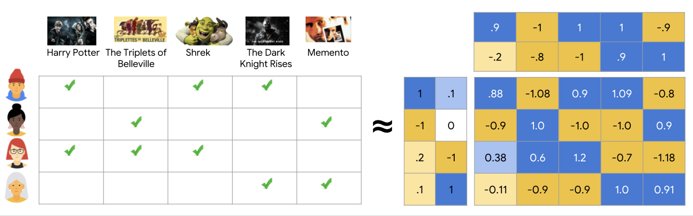
MSE = rating - predicted rating, where predictedrating = global avg + item bias + user-item interaction
Objective functions: MSE, Frobenius distance
Optimisers: ****SVD, PCA, NMF, SGD, ALS (alternating least squares)
Cons: Cold-start problem - during retrieval, a new item does not have an assigned embedding.
During retrieval, user embedding can be looked up from user embedding matrix.
..............
https://developers.google.com/machine-learning/recommendation/collaborative/matrix
Matrix factorisation is an embedding model where it learns and such that the
Objectives
There are several objective functions (to be minimised) to choose from:
-
Frobenius norm
For the first entry in the matrix, take the squared difference between true and predicted. Repeat the same for all other entries. Finally sum all these squared differences. Treat unobserved as zeros.
-
Observed-only MF
Only consider observed values.
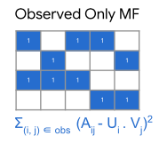
-
Weighted MF
Sometimes you also need to weight the observed pairs:

Optimisers
-
SGD
- Initialise embeddings to where K is no. of features
-
Weighted ALS
- Initialise embeddings randomly.
- Alternate between (i) fixing and solving , and (ii) fixing and solving . Each stage can be solved exactly via OLS.
⚠️ Only for objective functions that are squared loss.
-
SVD
Not good if is very sparse. (Why?)
-
Coordinate descent
-
Conjugate gradient
Embeddings ( and ) are initialised randomly.
Item-based collaborative filtering
-
Create interaction matrix

-
Create item-item similarity based on interaction matrix.

-
Recommend:
- Customer B: Item 3
- Customer C: Item 4, Item 2. Item 5 is similar to Item 4 (similarity value: 0.82). Item 2 is similar to Item 3 (similarity value: 0.45).
Neighbourhood methods based on feedback matrix
Get k most similar users to the user, recommend new items.
Supervised learning
Neural collaborative filtering
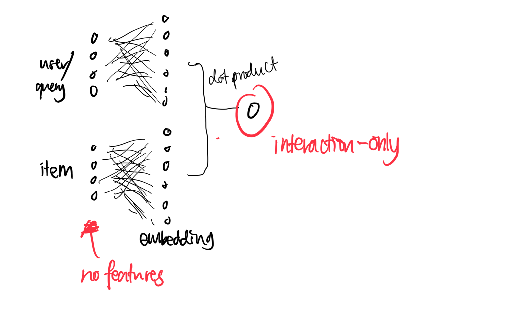
Hybrid
"feature-and-interaction filtering"
Combination of content-based and collaborative filtering
Uses both
- Features of
- Users
- Items
- Interactions between users and items
Supervised learning
Can be framed as binary classification or multiclass classification.

During retrieval, ???
LTR
LTR trains a model to directly predict the probability of a certain item ranking over another item.
Factorisation machine
A generalisation of matrix factorisation that allows use of item and user metadata, and feedback signals. It models the interaction between user and item with higher-order dimensions. This is in contrast to Matrix Factorisation, where interaction is modelled as dot-product.
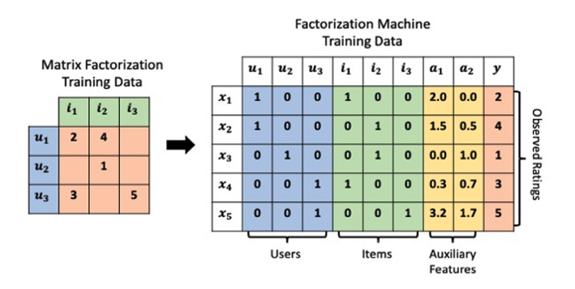
Retrieval
One can think of the embedding space as an abstract representation common to both users and items, in which we can measure the notion of closeness or relevance using similarity metric.
- Cosine
- Euclidean
- Dot product
At inference time,
- Look up embedding of input
- If input is a user/query, look up its embedding.
- If input is an item, look up its embedding.
- Select top k nearest neighbours. One may consider using approximate nearest neighbours for large corpora.
Metrics
Accuracy: How similar are the recommendations compared to previous interactions?
Diversity: How dissimilar are the recommendations?
Coverage: What % of the user-item space are recommended?
Serendipity: How surprising are the relevant recommendations?
Novelty: How surprising are the recommendations in general?
Relevancy: How relevant are the recommendations?
Tricks
- 2-stage:
- Stage 1: Candidate generation
- Stage 2: Ranking

-
Banding
The top predictions are what the user has already read. But we don't want that. Instead it is customary to use the 70% percentile onwards.
Case studies
Recsys
Content-based
Complexity: where is the no. of users
- Item-based
- User-based
A user can be represented as the average of items they interacted. Can use cosine similarity to compare
Pros:
- Explainable (can explain via features)
- Can recommend new items & unpopular items
- Does not depend on other user data (CF)
Cons:
- Cold start for new users
- Hard to find features for unstructured data like images
- No variety — might not recommend items outside user's content profile
Collaborative filtering
Pros:
- No need feature selection
Cons:
- Cold start
- Sparse!!!
- Cannot recommend an item that no one has rated
- Tend to recommend popular items
User-based nearest neighbour
Complexity:
where is the no. of users. Given a context user, find the similarity between the other users.
In order to find most similar users (in the predict state), we need to do a weighted sum over these users.
Similarity measures
-
Jaccard
-
cons
ignore value of ratings
-
-
Cosine similarity
-
cons
treats missing (0's) as negative
-
-
Centered cosine similarity (pearson correlation)
- Normalise every row (user) by subtracting the mean (ignore nil values)
- Do cosine similarity. Treat nil values as 0.
Item-based nearest neighbour
(defined similarly)
💡 Why is item-item better than user-user? Users have multiple tastes (cannot be captured by the average)
Predict
For a context user, their predicted rating for a particular item is
where user {users who have rated this item before} and is the normalised rating
Evaluating prediction

replacement for error measure — use top k
prediction diversity — maybe got other things i also like
prediction context — i interested in other things liao your prediction outdated
order of predictions


YouTube
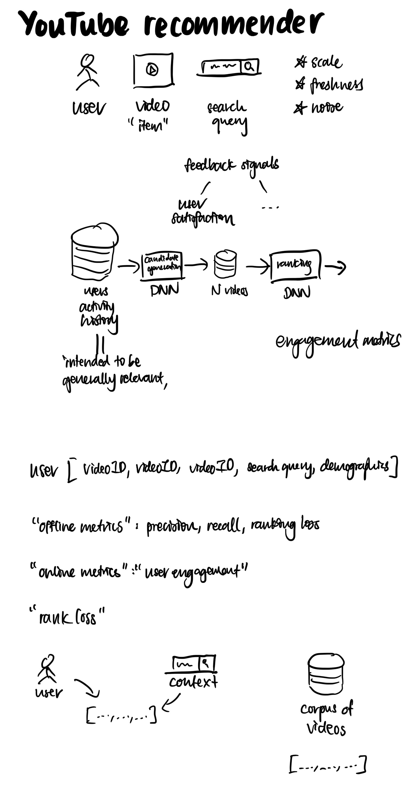
Motivation
“Discover personalised content from an ever-growing corpus of videos”
Data size
“Hundreds of features”
- Users: 1B
- ID
- Metadata
- Demographic features
- Device
- Geographic region
- Device
- Gender
- Logged-in state
- User language
- Age
- Videos: “million”
- Video ID
- Video metadata (“impression data”)
- Video language
- Thumbnail image
- …
- User profile
- Watch history (aggregated from 50 recent videos)
- Search history (aggregated from 50 recent searches)
- Last search query
- Time since last watch
- Feedback
- Implicit
- Watch (i.e. user completing a video; binary)
- Explicit (sparse)
- Activity history
- Thumbs up/down
- Implicit
- Age of the training example as a feature*
Approach
2-step approach allows them to make recommendations from a very large corpus of videos, while still being certain that the small number of videos appearing on the device are personalised and engaging for the user.
Predicting the next watched video.
Global video embedding
No. of videos to use for embedding is top N by clicked impressions.
Candidate generation
Hybrid though the paper labels it as collaborative filtering. Extreme multiclass classification.
Retrieval (under “tens of milliseconds”)
- Given a user as input, choose top N classes (videos)
Ranking
Logistic regression. Uses “hundreds of features”.
During retrieval, the list of videos is sorted by this score and returned to the user.
Metrics
Development
During development, precision, recall, ranking loss etc. were used to guide iterative improvements to the models.
Final evaluation
For the final evaluation, A/B testing was used, relying on CTR, watch time, etc. via live experiments.
Learnings
- Future leak
- Surrogate problem
- Next watched video
- Train-test split
- Cold-start: demographic features as a prior
- Representing a temporal sequence of user actions
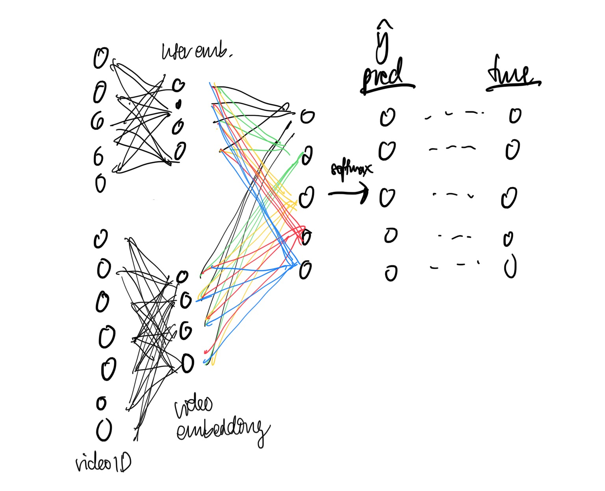
Survival analysis
To measure any duration. Time-to-event analysis.
- How long does this population live for?
- How long will a particular customer remain with your business? (After how much time will this customer churn?)
- How long will this machine last, after successfully running for a year?
Concepts
- Birth (= start)
- Death (= end)
- Survival probability
At the time of inference, it is not
Stream processing
- Reservoir sampling
- The first B items are inserted into the reservoir.
- Choose one of these items. With probability where is the current time, replace it with the current item in the stream.
💡 This maintains a uniform random sample
- (optional material)
Hyperparameter optimisation
- HyperBand and ASHA (Asynchronous Successive ZHalving Algorithm): random + optimise model
- Bayesian Optimisation
- optimal, but public packages aren’t great
- Random forest
- 1cycle policy (learning rate for deep learning tasks)
- Population-based training
Grid search
Inefficient
Random search
Easy and near optimal
Libraries
- RayTune
- Katib
- Hyperas
- SIGOPT
- Sweeps
- Keras Tuner
Feature transformation
Why transform?
For scaling:
- The goal of applying feature scaling is to make sure features are on almost the same scale so that each feature is equally important and make it easier to process by most ML algorithms.
- Scaling used used for neural networks and distance-based algorithms (eg. k-NN, SVM, NN). If an algorithm is not distance-based, feature scaling is unimportant (eg. Naive Bayes, LDA, tree-based models).
Type transformation
Categorical features
-
Ordinal
-
Nominal
- Drop
-
Label encoding: for ordinal variable (with clear ordering)
-
Binary encoding
-
One-hot encoding: for nominal variables (without intrinsic ranking)
💡 If cardinality is , resulting encoding does have to be n new features. It could be , where the last cardinality encodes for absence.
-
One to many
-
Interaction features (combine)
-
Categorical data: variable that can take a limited no. of values
-
High cardinality = index
-
Embedding
Note on OOV (out-of-vocabulary) bucket: Having an “Others” group will ensure that the categorical transformation is robust to unseen data.
💡 One-hot encoding categorical features is bad for tree-based models, especially because we create many binary sparse features and from the splitting algorithm’s point of view, they’re all independent. As a result, continuous variables are automatically given higher importance and chosen at the top of the tree to make a split. https://towardsdatascience.com/step-by-step-guide-to-explaining-your-ml-project-during-a-data-science-interview-81dfaaa408bf
Date time features
Inherently cyclic features. Can be treated as embeddings. Example to convert day (1-7) to 2 feature cols:
day_sin = np.sin((2*np.pi*col)/max(col))
day_cos = np.cos((2*np.pi*col)/max(col))
Numerical transformation
Min-max scaling
Max-Min Normalisation typically allows us to transform the data with varying scales so that no specific dimension will dominate the statistics, and it does not require making a very strong assumption about the distribution of the data
How?
Why?
So that we work with small numbers. The benefits are:
- Helps gradient descent converge more quickly.
- Helps avoid the NaN trap. Certain optimisers might result in NaNs is gradient update is too large.
- Helps the model learn appropriate weights for each feature. WIthout it, the model will pay too much attention to features having a wider range.
- Certain functions are not stable when dealing with large numbers e.g. softmax
When?
- When feature is approximately uniform
- You know the approximate upper and lower bounds
- Few outliers
Examples
Age
Counter examples
Income
Standardisation
aka Z-score normalisation, standard scaling
where is the mean of the sample, and is the standard deviation of the sample.
Standardization centers the features at mean 0 with a standard deviation 1.
Which is preferred by many algorithms.
Standardization keeps useful information from outliers.
When?
- When the feature distribution does not contain extreme outliers
Log scaling
Note that for small (such that ), using np.log(1+x) means performing np.log(1) which is 0. Using a slightly different transformation below, using np.log1p is more accurate in floating-point accuracy.
When?
- When data follows power law distribution
Examples
Ratings per movie
Feature clipping
How?
- By z-score (within 3 standard deviations)
- Set min and max
When?
- When there are extreme outliers
Normalisation
Normalization scales the features to a 0-1 range.
This is a special case of Min-max scaling.
It is useful when we need the data to be in a bounded interval.
- If Gaussian
- Domain knowledge (eg. Height)
Regular binning
Equally spaced boundaries

Quantile binning
Each bin has same number of samples
When?
Bimodal / multimodal / uneven distribution

Notes
Feature selection
Benefits?
- Reduces overfitting. This allows the model to focus on important features of the data.
- Improves the model’s predictions
- Reduces computation time
- Makes the model more explainable and interpretable
Filter methods
These methods apply a statistical measure to assign a scoring to each feature. The methods are often univariate and consider the feature independently, or with regard to the dependent variable.
- Chi-squared test (between 2 categorical variables)
- Measures dependence between stochastic variables
- Weeds out features that are most likely to be independent of class and therefore irrelevant for classification
- ANOVA / F-test (between a categorical and numerical variable)
- Estimates the degree of linear dependency between two random variables.
- Pearson’s correlation
- Measures the similarity between two features. Pick the features that have the highest correlation with the response variable.
- Variance thresholding
- The lower the variance, the less information is contained in the feature, the less value it has in predicting the response variable.
Wrapper methods
These methods compute models with a certain subset of features, and evaluate the importance of each feature.
- Recursive feature elimination
- Forward selection
- Backward selection
- Stepwise selection
Embedded methods
These methods learn which features best contribute to the accuracy of the model while while the model is being created.
- Lasso and ridge regression
- Decision tree
- The most important features are near the root of the tree
- Sklearn’s implementation: feature importance is a function of no. of samples, no. of samples on left, no. of samples on the right, and their respective impurities
Feature engineering
Process of extracting features from raw data
- Examples:
- Feature cross / synthetic feature (formed by crossing two or more features) Allows one to learn a non-linearity within a linear model
- Location vs. distance
- Timestamp vs. period
- Polynomial features
- Unlucky numbers
- Metadata
- Domain knowledge
Missing Values
-
Drop column/row
-
Impute using mean, median, etc.
-
Extend imputation
-
Use algorithms that support missing values eg. k-NN
💡 Missing values can be filled in by looking at the other features that are highly correlated with that column. In pandas, this can be done using a combination of
groupbyandfillna. Eg. will be a column called Fare which has some missing values. This column is, say, highly correlated with PassengerClass. One would want to group the passengers into their respective PassengerClass first, then take the median as the fill value. Also, think about it from the perspective of an organisation who set the fare: how do you think they would price a ticket? Usually it's based on 1) age, 2) no. of people travelling with you and 3) the kind of service you chose.
⚠️ While dealing with missing values, combine both training and test set. Otherwise filled data may overfit to training or test set samples.
Train-test split
Data Leakage
- Target leakage: some predictors are not available at inference time
- Train-test contamination
Random
Okay when
- Data doesn’t change much over time
Not when
- Data with burstiness (data arriving in intermittent bursts).
- Time series data. Train data will include a “sneak preview” to the test data.
Cross validation
A way to evaluate the model performance.
Define no. of splits = 5 (5-fold)
skf = StratifiedKFold(n_splits=5) # 5-fold
folds = skf.split(X, y)
accuracies = []
for fold in folds:
model.fit()
acc = model.score()
accuracies.append(acc)
mean(accuracies)
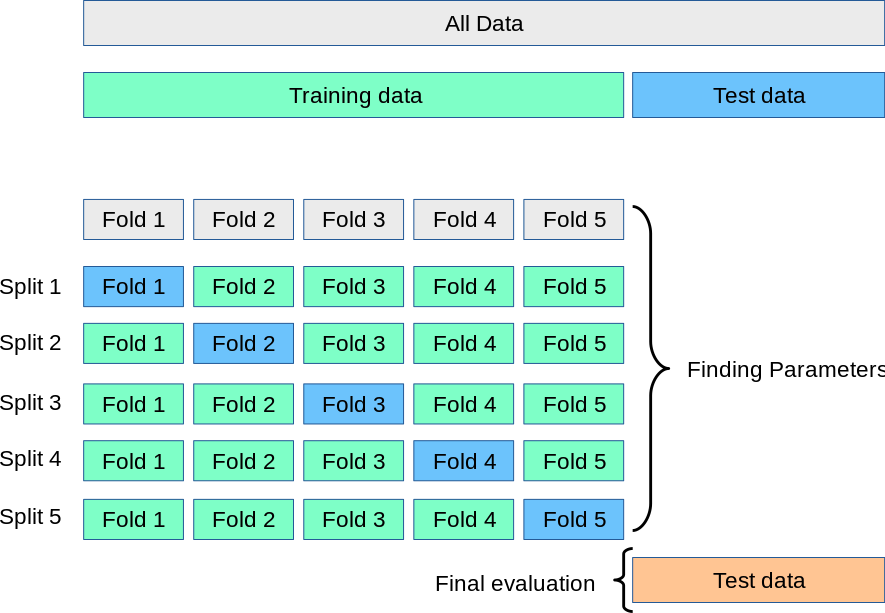
Ensembling
“Ensemble” here is an umbrella term that trains several models
http://www.ccs.neu.edu/home/vip/teach/MLcourse/4_boosting/slides/gradient_boosting.pdf
Ensemble learning
Ensemble methods (“bagging” and “boosting” are misnomers):
- Bagging (“create new models by bagging training sample”)
- Boosting (“create new models by boosting a previous model”)
Aggregating methods for predictions:
- Classification
- Max / majority / hard voting
- Soft voting
- Regression
- Average
- Weighted
“Bagging” = ensemble learning based on bootstrapping (“bootstrap aggregating”)
“Bootstrapping” = sampling technique
“Aggregating” = can mean “bagging” or “boosting” in this context
“Boosting” = a sequential process where each subsequent model attempts to correct the errors of the previous model
OR
ensemble method that seeks to create a strong classifier (model) based on “weak” classifiers
- How many trg examples to sample
- How many features to select
- How to select thresholds
- When to stop splitting
Simple bagging
Individual model: decision tree
- Sample with replacement 50 training examples (“bagging”)
- Train a tree
- Try a split for:
- Every feature
- Every possible threshold in every feature
- Every feature
- Try a split for:
- Repeat teps 1-2 for 1000 times
- Aggregate predictions
Random forest
Individual model: decision tree
- Sample with replacement 50 training examples (“bagging”)
- Train a tree
- Try a split for:
- Every feature in sqrt(p) out of p features (“feature bagging”)
- Every possible threshold in every feature
- Every feature in sqrt(p) out of p features (“feature bagging”)
- Try a split for:
- Repeat steps 1-2 for 1000 times
- Aggregate predictions
ExtraTrees (Extremely randomised trees)
Individual model: decision tree
- Take all training examples
- Train a tree
- Try a split for:
- Every feature in sqrt(p) out of p features (“feature bagging”)
- A random point (uniform distribution) in every feature
- Every feature in sqrt(p) out of p features (“feature bagging”)
- Try a split for:
- Repeat steps 1-2 1000 times
- Aggregate predictions
AdaBoost
AKA Adaptive Boosting
Individual model: decision tree
Quasi gradient boost with weights
- Depth
- Weight of datapoint
- Amount_of_say
The idea is to set weights to classifiers and samples in a way that forces classifiers to concentrate on observations that are too difficult to correctly classify
- Initialise weights of each data point. If there are 100 data points, each point is 0.01
- Sample with replacement all training examples (same size)
- Using the weights as categorical distribution of choosing data
- Then reset weights
- Train a tree with depth=2
- Calculate this tree’s final say during aggregation
- Error rate, e = ???
- Say = 1/2 log ((1-e)/e)
- Update weights
- If correct, (almost) no change
- if wrong, new weight = old weight * exp(say)
- Normalise weights
- Repeat 1000 times (from step 2)
- Aggregate predictions using amount_of_say (do weighted sum)
GBM
Gradient Boosting
Individual model: decision tree
-
Sample with replacement ("bagging")
-
Train a tree
- Try a split for:
- Every feature ?
- Every point?
- Every feature ?
by fitting model
- pred_y = tree1.predict(data)
- residual_error_1 = actual_y - pred_y
- tree2.fit(residual_error_1)
- Try a split for:
-
Repeat steps 1-2 for 1000 times.
Boosting trees sequentially add predictors and corrects previous models. This method fits the new model to new residuals of the previous prediction and then minimises the loss when adding the latest prediction.
XGBoost
Optimisations
- To find thresholds, they use pre-sort-based algorithm
- Using a subset of data available the node, bin features into histograms
LightGBM
Optimisations
- To find thresholds, they use histogram-based algorithm which buckets continuous features.
- Build tree in depth-first.
- Improved split strategy.
- Improved splitting for categorical features.
- Supports NaNs.
Histogram-based gradient boosting
Optimisations
- To find thresholds, they use histogram-based algorithm which buckets continuous features. Faster than normal for n_samples > 10,000.
- Native support for NaNs.
CatBoost
Optimisations
- To find thresholds, they use histogram-based algorithm which buckets continuous features.
Forest Inference Library by rapids.ai
Simple ensembling
Aggregate predictions of different models
Stacking & blending
Everyone says different things.
Meta-meta-estimator
Blending
Linear combination of predictors
Neural network estimator ish
Stacking and blending differ by the type of folds in the cross validation used during training of each layer
EDA++
Skewness
Measures symmetry of distribution
df[col].skew()
- Skewness = 0: symmetric
- Skewness > 0: longer right tail
- Skewness < 0: longer left tail
Kurtosis
Measures heaviness of distribution tails.
Excess kurtosis is a metric that compares the kurtosis of a distribution against the kurtosis of a normal distribution (kurtosis=3).
df[col].kurtosis()
Excess kurtosis = Kurtosis - 3
-
Excess kurtosis close to 0 (normal)
-
Excess kurtosis >> 0

-
Excess kurtosis << 0
Tests
Correlation
💡 Information about features with high correlation can be useful when filling missing values.
Categorical vs. categorical
-
Cramér's V
A measure of association between two nominal variables (0 to 1). It is based on Pearson's chi-squared statistic.
-
Chi-square test / Pearson's chi-square test
Assume two variables are independent and follows the uniform distribution.
Categorical vs. numerical
- Correlation Ratio
- One-way ANOVA test
Numerical vs. numerical
Pearson's correlation
df.corr()
PPS
Predictive Power Score.
Score 0 = no linear/nonlinear predictive relationship
Score 1 = strong linear/nonlinear predictive relationship
Expect to find:
- Best univariate predictor
- Linear or nonlinear relationships
Distribution
Distribution across features between train and test set!

One potential problem for both features is, the distribution has more spikes and bumps in training set, but it is smoother in test set. Model may not be able to generalize to test set because of this reason.
Normality
- Histogram (eyeball)
- QQ plot (eyeball)
- Shapiro-Wilk
- Kolmogorov-Smirnov
from scipy.stats import kstest, norm
my_data = norm.rvs(size=1000)
ks_statistic, p_value = kstest(my_data, 'norm')
print(ks_statistic, p_value)
Multicollinearity
Multicollinearity occurs when there is a high correlation between the independent variables.
Variance inflation factor
This metric quantifies the severity of multicollinearity in an ordinary least squares regression analysis.
ML system design
- 0. Overview
- 1. Project setup / problem framing
- 2. Data collection
- 3. Exploration
- 4. Preprocessing
- 5. Modelling
- 6. Reporting / documentation
- 7. Production & code
- Client speak
- Resources
0. Overview
Intelligence = can process information, and inform future decisions
- AI: Make machines solve problems associated with human intelligence. Anything that can make computers mimic human behaviour
- Machine Learning: Make machines learn (from experience) instead of explicit programming
- Deep Learning: Make machines extract information / patterns using neural networks
From chiphuyen:
- project setup
- data pipeline
- modelling and training
- serving
list of mlops tools by chip huynr
1. Project setup / problem framing
- Motivation
- What is the current pain point?
- Goals
- What do you want to achieve with this problem?
- Background information
- Definitions
- End-user experience
- A walkthrough of how end users are supposed to use the system.
- Performance constraints (speed & accuracy)
- How good & fast must the prediction be?
- High-frequency trading requires very fast predictions
- What’s more important - precision or recall?
- What’s more costly: FN or FP?
- How good & fast must the prediction be?
- Evaluation
- What metrics do you use to evaluate your system during training and inference?
- Project constraints
- Hardware
- Working environment
- Developer tools
- Workflow orchestration
- Luigi
- Airflow
- Experiment management
- Tensorboard
- MLFlow
- Weights & Biases
- Workflow orchestration
- Foresight
- What is the final environment in which the code will be run?
- Where would you see the model in 5 years?
2. Data collection
- Data sources
- Open source
- Data augmentation (CV)
- Synthetic data (esp. NLP)
- Data collection
- Data okay? Is the data noisy? Need to go back to client? Limitations? Features you think you can get from client?
- Questions you might ask the client
- Interesting things you did not find
- Potential bias?
- Data storage
- Database (eg. Postgres)
- Object store. Stores binary data (eg. S3)
- Data lake. Aggregates features not obtainable from database like logs
- Feature store. Stores ML features (eg. FEAST, Michaelangelo)
- Representation
- Challenges
- Distribution
- Privacy
- Biases
3. Exploration
- Clustering
- Dimensionality reduction
4. Preprocessing
Feature engineering
Feature transformation
Feature selection
Train-test split
Synthetic data augmentation*
5. Modelling
- Model selection
- Baselines: random, human, simple heuristic
- Assumptions and considerations
- Transfer learning 📦
- Weight initialisation 📦
- Layers 📦
- Improving predictive power🧪
- Regularisation
- Hyperparameter tuning🧪, Hyperparameter tuning 📦
- Ensemble learning🧪
- Loss function
- Correcting datapoints^
- Improving speed 📦
- Scaling*
- Model parallelism
- Data parallelism
- Model evaluation
- Cross validation^
- Bias and variance🧪^
6. Reporting / documentation
- Explainability, interpretability & biasness🧪
- Feature importance
- Evaluation metrics
- Inference speed
- Model confidence
- Misuses
- Ablation studies
- Visualisations
7. Production & code
-
Data
- Continual collection
- Versioning
- DVC
- Pachyderm
-
Software
- Correctness of code
-
Production environment
-
Model
- Outdated - retrain
- Biased - need to train with data privacy
-
Tests
Client speak
I want 5% more accuracy
- Maybe we can look at a different metric
- What does 5% mean to the business?
- “I want 100% accuracy.”
- “I want to increase accuracy.”
Resources
Chip Huyen’s Machine Learning Systems Design
Production Level Tech Stack
Google’s Machine Learning Crash Course Problem Framing
Machine Learning in Python: Main developments and technology trends in data science, machine learning, and artificial intelligence
https://github.com/eugeneyan/applied-ml
https://github.com/ahkarami/Deep-Learning-in-Production
https://course.fullstackdeeplearning.com
https://huyenchip.com/machine-learning-systems-design/toc.html
https://towardsdatascience.com/architecting-a-machine-learning-pipeline-a847f094d1c7
https://becominghuman.ai/machine-learning-system-design-f2f4018f2f8
https://www.theinsaneapp.com/2021/03/system-design-and-recommendation-algorithms.html?m=1
Metrics
AUC
https://towardsdatascience.com/understanding-auc-roc-curve-68b2303cc9c5
https://towardsdatascience.com/an-interesting-and-intuitive-view-of-auc-5f6498d87328
AUC is a ranking metric. What matters is the score order, not the score value itself.
- How much a model is capable of distinguishing between classes. AUC 1 means it has good measure of separability AUC 0 means it is predicting cats as dogs and dogs as cats. AUC 0.5 means it is not capable of distinguishing between classes.
💡 AUC = 0.7 There is a 70% chance that the model will be able to distinguish between positive and negative class.
Bonus questions
https://medium.com/@ProfessorF/visualizing-the-solution-to-the-monty-hall-problem-bf4a08c8ed8f
Even though there’s a science bit in data science theres still a gap between what is
taught and what is practised.
It is important for us to have practical knowledge to see the gaps in our theoretical understanding.
Sparsity? Consumes more memory
-
I observed 20 cloudy days. I also observed 5 rainy days. What's the probability of rain given that it is cloudy?
1/4. Can also use Bayes' rule.
1. Project setup
2. Data collection
If you had to prioritise improving one of the areas below in your machine learning project, which would have the most impact?
Quality and size of data
A deeper network
Using the latest optimisation algorithm
A more clever loss function
3. Exploration
Why must we continually visualise?
4. Preprocessing
Transforming time data
What do you do with long-tailed
How to split train and test? Stratify
why do we do feature selection?
Why must we transform?
The pros and cons of one-hot encoding
One-hot encoding: LightGBM
It is common to represent categorical features with one-hot encoding, but this approach is suboptimal for tree learners. Particularly for high-cardinality categorical features, a tree built on one-hot features tends to be unbalanced and needs to grow very deep to achieve good accuracy.
One-hot encoding: CatBoost
Do not use one-hot encoding during preprocessing. This affects both the training speed and the resulting quality.
What if I have high cardinality category?
Look at the cardinality. If it’s 80% of the training examples, then this is probably not a feature but indexes the examples.
Why do we bootstrap samples???
5. Modelling
-
Why do a forest of weak learners learn well?
-
Can loss decomposition be used to compare models?
-
When to choose L1 and L2?
-
Why not use linear regression in place of logistic regression?
It is not robust to outliers in the data.
-
What is the perceptron in MLP? What is an MLP?

A perception is a simple binary classification algorithm. It takes in a few inputs, each of which has a weight, and generates an output decision of "0" or "1".
An MLP is a perceptron that teams up with additional perceptrons.
-
What is decision boundary?
Decision boundary helps to differentiate probabilities into positive and negative class.
-
Why is cross validation not done on DL models?
Expensive
-
What is overfitting?
Overfitting = The model approximates the data/observation, which is true model and noise
Good fit = The model approximates true model
Underfitting = The model does not approximate true model
-
What happens if I have class imbalance for the test set? What should I use?
Use a confusion matrix because it lets you see the overall performance.
-
Accuracy for train set is higher than test set. Why?
Overfitting. This is due to
- different distributions of data between the train and test.
- model is too powerful
6. Reporting
7. Production
- What do you know about A/B testing in the context of streaming?
- What are the differences between L1 and L2 regularization, why don’t people use L0.5 regularization for instance?
- What is the difference between online and batch gradient descent?
- What is the best way to communicate ML results to stakeholders?
- Write the equation for building a classifier using Logistic Regression.
- Given a month’s worth of login data from Netflix such as account_id, device_id, and metadata concerning payments, how would you detect payment fraud?
- How would you design an experiment for a new content recommendation model we’re thinking of rolling out? What metrics would matter?
- Write SQL queries to find a time difference between two events.
- How would you build and test a metric to compare two users’s ranked lists of movie/tv show preferences?
- How would you select a representative sample of search queries from five million?
- Why is Rectified Linear Unit a good activation function?
- If Netflix is looking to expand its presence in Asia, what are some factors that you can use to evaluate the size of the Asia market, and what can Netflix do to capture this market?
- How would we approach to attribution modeling to measure marketing effectiveness?
- How would you determine if the price of a Netflix subscription is truly the deciding factor for a consumer?
Bias-variance decomposition
http://rasbt.github.io/mlxtend/user_guide/evaluate/bias_variance_decomp/
Should use comparative adjectives like “larger bias”
Why learn about bias and variance decomposition?
A useful property of the mean squared error is that its expectation can be easily decomposed into bias and variance, which can be used to explain underfitting and overfitting. These values, although requiring true values, can be estimated, and give meaning to “closeness to true model” and “generalisability“.
What is?
Expected MSE = Bias^2 + Variance + Var(noise)
Bias
How different is our prediction and the real prediction, on average over bootstrap samples?
“Closeness to true model”
“Predictive power”
What we want is to see that these predictions are close to the true prediction across subsamples (“unseen data”) and different x inputs.
Variance
How varied are our predictions, on average over bootstrap samples?
“Varying predictions across different subsamples“
“Generalisability”
“Consistency”
If this value is high, it means that, on the extreme case, all samples are very different from one another. One most plausible reason for this is that the model is overfitted to the dataset. What we want is to see that these predictions are consistently different (from the mean) across subsamples (“unseen data”) and different x inputs.
Variance of noise
Irreducible part of the error, due to the variability in the data. Errors in measurement (“data collection”) can be tolerated, but inconsistent measurement errors cannot (?).
Case study: Single vs. Bagging
Dark blue = model
Dark blue dotted = data = model + noise
Dark red = one fitted tree, trained over a training sample
Light red = other trees, trained over other and different randomly drawn instances of training samples
Cyan = Average of the estimators
- Variance: How varied are the vertical width of light red (see x=2.4)
- Bias: Difference between cyan and dark blue.
Top left:
Cyan ≈ dark blue -> low bias
Tall vertical shaded light reds -> large variance
Top right:
Cyan further from dark blue -> larger bias, see x=2.4
Shorter vertical shaded light reds -> lower variance
Workflow:
- Calculate MSE to confirm intuition.
- Conclusion: The tradeoff is better for bagging because averaging several decision trees fit on bootstrap copies
- Slightly increases the bias term, but
- Allows for a larger reduction of variance
- Which results in a lower overall mean squared error.
Libraries
from mlxtend.evaluate import bias_variance_decomp
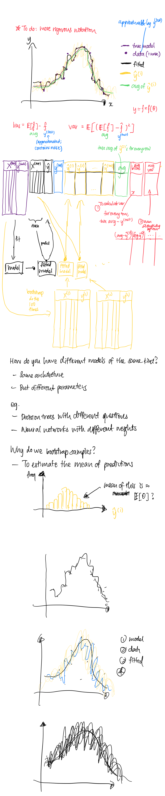
Rare event classification / anomaly detection
Severe class imbalance (1% positive)
Methods
At the data level
- Over-sampling of minority class
- Naive random oversampling (with replacement). The augmented data should be used instead of the original data.
- SMOTE (Synthetic Minority Oversampling Technique). Generate new samples by interpolation. No major benefits (Andreas Muller, empirical data).
- Overfitting
- Under-sampling of majority class
- Naive discarding
- Prototype generation
- Prototype selection
- Controlled techniques
- Cleaning techniques
- Over-sampling + cleaning under-sampling that removes extreme outliers in majority class
- Ensemble of samplers
- Random forest, each tree given a balanced bootstrap sample
- etc.
At the classifier level
- Weight balancing in loss function. Take inverse of no. of samples for each class.
- Thresholding / threshold moving / post scaling
- Cost sensitive learning
- One-class classification / one-class random forest
- Focal loss
- Gaussian Mixture Model
- Auto-encoder
Adaptive
- ADASYN sampling (Adaptive Synthetic). Generate new samples by next to original samples which are wrongly classified using a k-NN classifier.
Commonly used metrics
- NOT ACCURACY (Andreas Muller)
- NOT AUC ROC (Andreas Muller)
Libraries
imbalanced-learn from scikit-contrib
sheet-breaks and machine failure in manufacturing, clicks or purchase in an online industry..
Similar to anomaly detection. In anomaly detection, we learn the pattern of a normal process. Anything that does not follow this pattern is classified as an anomaly. For a binary classification of rare events, we can use a similar approach using autoencoders
Use dense autoencoder or LSTM autoencoder.
How to use an Autoencoder rare-event classification?
- We will divide the data into two parts: positively labeled and negatively labeled.
- The negatively labeled data is treated as normal state of the process. A normal state is when the process is eventless.
- We will ignore the positively labeled data, and train an Autoencoder on only negatively labeled data.
- This Autoencoder has now learned the features of the normal process.
- A well-trained Autoencoder will predict any new data that is coming from the normal state of the process (as it will have the same pattern or distribution).
- Therefore, the reconstruction error will be small.
- However, if we try to reconstruct a data from a rare-event, the Autoencoder will struggle.
- This will make the reconstruction error high during the rare-event.
- We can catch such high reconstruction errors and label them as a rare-event prediction.
- This procedure is similar to anomaly detection methods.
BLAS
Basic Linear Algebra Subprograms
The low-level part of the computer’s system that is responsible for efficiently performing numerical linear algebra
Implementations
⁃ Intel MKL (Math Kernel Library)
⁃ OpenBLAS
⁃ ATLAS (Automatically Tuned Linear Algebra Software)
⁃ AMD Core Math Library (ACML)
LAPACK (Linear Algebra Package)
NumPy
MATLAB
R
S - short-precision real (float32)
D - double-precision real (float64/double)
C - short-precision complex
Z - long-precision complex
Coursera
Bonus questions
-
What is convergence?
The process of getting close to an answer
-
What is a loss function?
Measures how far you are from the current guess
-
What does the optimiser do?
Generates a new and improved guess
-
Why split data into training and test?
To test a model with previously unseen data
-
Why is overfitting more likely to occur on smaller datasets?
Because there's less likelihood of all possible features being encountered in the training process.
-
Why is the validation accuracy a better indicator of model performance than training accuracy?
The validation accuracy is based on images that the model hasn't been trained with, and thus a better indicator of how the model will perform with new images.
-
What does a slow decline of validation accuracy and incline in train accuracy on the plot indicate?
Overfitting.
-
Why do dropouts help overfitting?
Because neighbour neurons can have similar weights and thus can skew the final training
-
What could be the reason behind jaggedness and sudden dips in accuracy graph?
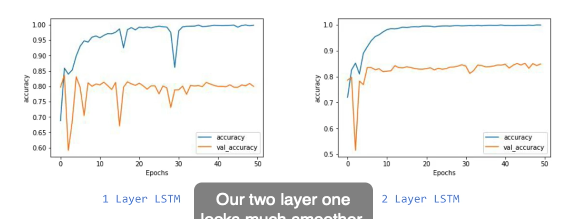
The model needs improvement (need it to be more complex).
Computer vision
Computer vision is the field of having a computer understand and label what is present in an image.
-
What is convolution?
A technique to isolate features in images.
-
What is pooling?
A technique to reduce information in an image while maintaining features.
-
How do convolutions improve image recognition?
They isolate features in images.
-
Why is transferring learning useful?
Because I can use the features that were learned from large data sets that I may not have access to
Improving speed of training
Reduce image size by half
Improving accuracy
Visual
Visually inspect images that are wrongly classified, and use these and include them in the training. The model is not exposed to that kind of image so just add it to the training set.
Cropping the wrong images.
Augmentation
Image augmentation introduces a random element to the training images. But if the validation set doesn't have the same randomness, that the validation accuracy can fluctuate.
Overfitting
- Augmentation
- Dropout
- ! Validation data should not be augmented
NLP
-
Subwords must be used with recurrent neural networks. Why?
Sequence becomes much more important when dealing with subwords, but we're ignoring word positions.
-
Why would you get more overfitting in NLP?
Because you always always have OOV in the validation data set (the training data has never seen them).
-
Why does sequence make a large difference when determining semantics of language?
Because the order in which words appear dictate their impact on the meaning of the sentence.
-
In a generative text model, why and what would you do if the word keeps repeating itself?
The RNN only carries the context forward. Change the RNN to be bidirectional.
-
When predicting word to generate poetry, the more words predicted the more likely it will end up gibberish. Why?
Because the probability that each word matches an existing phrase goes down the more words you create.
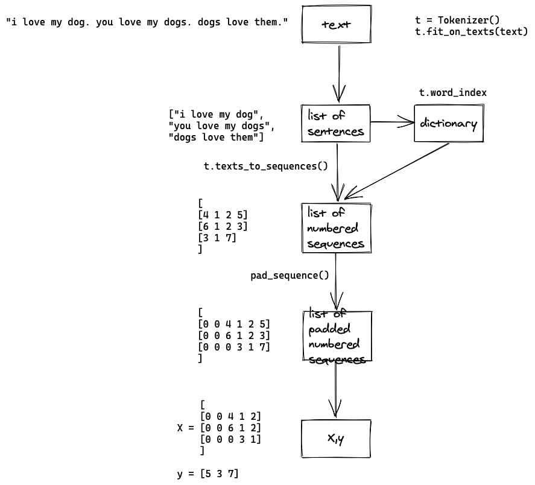
Prepare data
corpus = [
"I love my dog",
"I love my cat",
"You love my dog!"
]
- tokenising
- OOV
- convert a text to numbers
- padding
- sequences
from tf.keras.preprocessing.text import Tokenizer
t = Tokenizer(num_words=100, oov_token="<OOV>")
t.fit_on_texts(corpus)
>>> t.word_index
{'<OOV>': 1,
'twinkle': 2,
'little': 3,
...
>>> t.texts_to_sequences(["i love manatees"])
[[4, 2, 1]]
>>> pad_sequences(
t.texts_to_sequences(["i", "i you you you"]),
padding='pre', # post
maxlen=None)
array([[0, 0, 0, 4],
[4, 7, 7, 7]], dtype=int32)
Prepare for text classification
Prepare X and y
Prepare for next-word prediction
Get ngram sequence
input_sequences = []
for line in corpus:
token_list = t.texts_to_sequences([line])[0]
for i in range(1, len(token_list)):
ngram_sequence = token_list[:i+1]
input_sequences.append(ngram_sequence)
>>> input_sequences
[[1, 1],
[1, 1, 2],
[1, 1, 2, 3],
...
max_sequence_len = max([len(x) for x in input_sequences])
input_sequences = np.array(pad_sequences(
input_sequences, maxlen=max_sequence_len))
>>> input_sequences
array([[ 0, 0, 0, 0, 1, 1],
[ 0, 0, 0, 1, 1, 2],
[ 0, 0, 1, 1, 2, 3],
...
X, y = input_sequences[:,:-1], input_sequences[:,-1]
y = tf.keras.utils.to_categorical(y, num_classes=total_words)
Modelling
-
CNN. Can use Conv1D then GlobalAveragePooling1D
-
Sequence modelling
Cell state in RNNs is akin to context. Context should be updated and retained throughout the sequence of words.
Time series
- Prediction
- Imputation
- Detect anomalies
Common patterns in time series
- Trends
- Seasonality
- Autocorrelation
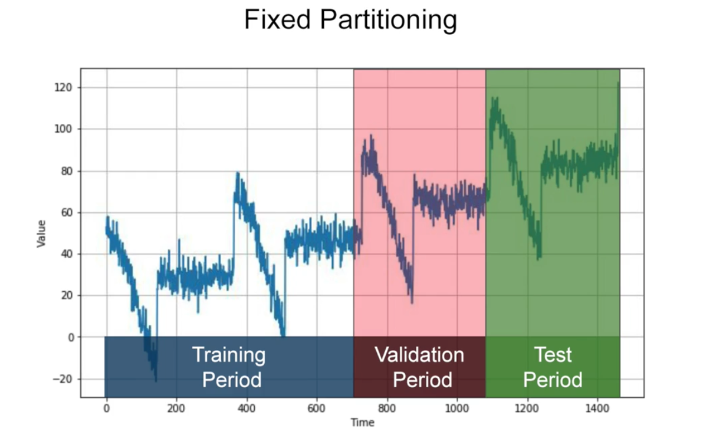
Method: Moving average
eliminates noise, but does not anticipate trend or seasonality
Method: Differencing
Improve generalisation

https://twitter.com/rasbt/status/1369045968738476035?s=12
Course history
-
TensorFlow in Practice on Coursera by deeplearning.ai
- Intro to TensorFlow for Artificial Intelligence, Machine Learning and Deep Learning
- Convolutional Neural Networks in TensorFlow
- Natural Language Processing in TensorFlow
- Sequences, Time Seres and Prediction
-
Data visualisation book
-
Machine Learning in Python: Main developments and technology trends in data science, machine learning, and artificial intelligence
-
Google Developer Machine Learning
-
Crash course
- Introduction to ML
- Framing
- Descending into ML
- Reducing loss
- First steps with TF
- Generalisation
- Training and test sets
- Validation set
- Representation
- Feature crosses
- Regularisation: Simplicity
- Regularisation: Sparsity
- Logistic regression
- Classification
- Neural networks
- Training neural nets
- Multi-class neural nets
- Embeddings
- Static vs dynamic training and inference
- Data dependencies
- Fairness
- ML systems in the real world
- Problem framing
- Data preparation and feature engineering
- Clustering
- Google developer recommendation system
- GANs
- Testing and debugging
-
Crash course
-
Deep Learning by Ian Goodfellow, Joshua Bengio and Aron Courville
-
- Introduction to deep learning
- Deep sequence modelling
- Deep computer vision
- Deep generative modelling
- Deep reinforcement learning
- Limitations and new frontiers
- Neurosymbolic hybrid AI
- Generalizable autonomy in robotics
- Neural rendering
- ML for scent
- Visualisation for machine learning, MIT 6.S191 (2019)
-
Fast.ai v3
-
CS231n: Convolutional Neural Networks for Visual Recognition
-
Neural Networks
- Image classification: Data-driven approach, k-NN, train-val-test
- Linear classification: SVM, softmax
- Optimisation: Stochastic gradient descent
- Backpropagation, intuitions
- NN Part 1: Setting up
- NN Part 2: Setting up data and loss
- NN Part 3: Learning and evaluation
- Case study
-
Convolutional Neural Networks
- Architectures, convolution, pooling layers
- Understanding and visualising convolutional neural networks
- Transfer learning and fine-tuning convolutional neural networks
-
-
Deep Learning Yearning by Andrew Ng
EDA
Image
- Google Facets
- Flatten image to a vector, project to t-SNE
- Calculate md5 hash to find duplicates
Image processing
Image frameworks
opencv reads in BGR not rgb
channels_last in Keras
Using scipy.ndimage.imread('img.jpg', mode='RGB'), the resulting array will always have this order: (H, W, D) i.e. (height, width, depth) because of the terminology that numpy uses for ndarrays (axis=0, axis=1, axis=2) or analogously (Y, X, Z) if one would like to visualize in 3 dimensions.
myImage = cv2.imread(“path”)
myImage is in the format HEIGHT, WIDTH, CHANNEL
import matplotlib.pyplot as plt
plt.imshow(a)
from PIL import Image
img = Image.open("lena.jpg")
Techniques
💡 Reducing dimensionality helps with computational efficiency
-
(Make deeper)
-
Convolution
-
Feature learning
-
Complex gradient
-
Output
padding = "valid"
padding = "same" (output size is the same as input size), where s > 1
-
-
Nonlinearity (tanh)
-
Max-pooling
-
Reduce feature map size (needed to aggregate information); derive higher levels of abstraction.
-
No. of strides is usually more than 1 to reduce dimensionality. Pooling is applied to each channel separately.
-
Forward
-
Backward
Gradients only flow back to the unit that was used
-
-
Nonlinearity: ReLU
-
Dropout
-
Regularisation; "ensembling"
-
Forward
Drop of the neurons.
where .
-
Backward
-
Gradients flow back to the unit that didn't experience dropout
-
-
Stacking uniform convolutional layers
- Stacking consecutive convolutional layers is equivalent to a convolutional layer in terms of receptive field size. Computationally cheaper.
-
[Modular] (concat)
- "Ensembling" of different kernels; different information can be captured at different levels
-
1x1 convolution
- Used before a convolutional layer to first reduce dimension; cross information learning (duh?)
-
Average-pooling
- Reduce feature map size (needed to aggregate information)
- Forward ...
- Backward Gradients flow back to all units
-
Batch norm
-
Note that mean and std are accumulated during training.
No. of samples is usually the no. of samples in the batch.
(See table below)
mean = 0.9old_mean + 0.1current_mean std = 0.9old_std + 0.1current_std
-
Normalisation improves loss contour (hence faster convergence); helps with covariate shift (distribution keeps changing at every layer); helps with regularisation because it is more robust to distribution changes
💡 For CNN batch norm, every channel will have a mean and std. (Replace "neuron1", "neuron2", etc. with "channel1", "channel2", ...
-
-
Kernel factorisation (spatially separable convolution)
- is equivalent to and in terms of receptive field (how?).Cos of computation is reduced.
-
Skip connections
- Gradient does not vanish → faster convergence; "ensembling"
-
Kernel factorisation (depthwise separable convolution)
- filter is equivalent to followed by . Cost of computation is reduced.
- Depthwise = no. of kernels determined by input channels Pointwise = 1x1 convolution
-
Zero convolution
| d | sample1 sample2 | mean* std* | sample1 sample2 |
|---|---|---|---|
| neuron1 | 4 5 | 4.5 1 | w1*(4-4.5)/1+b1 w1*(5-4.5)/1+b1 |
| neuron2 | 3 0 | 1.5 2 | w2*(3-1.5)/2+b2 w2*(0-1.5)/2+b2 |
| neuron3 | 2 8 | 5.0 1 | w3*(2-5.0)/1+b3 w3*(8-5.0)/1+b3 |
| neuron4 | 1 2 | 1.5 1 | w4*(1-1.5)/1+b4 w4*(2-2.0)/1+b4 |
Regularisation
Regularisation
- Adjusting data: data augmentation, noise injection, batch normalisation
- Parameter norm penalties
- Reduce model capacity: early stopping, weight sharing (convolutions), dropout
Basic CNN architectures
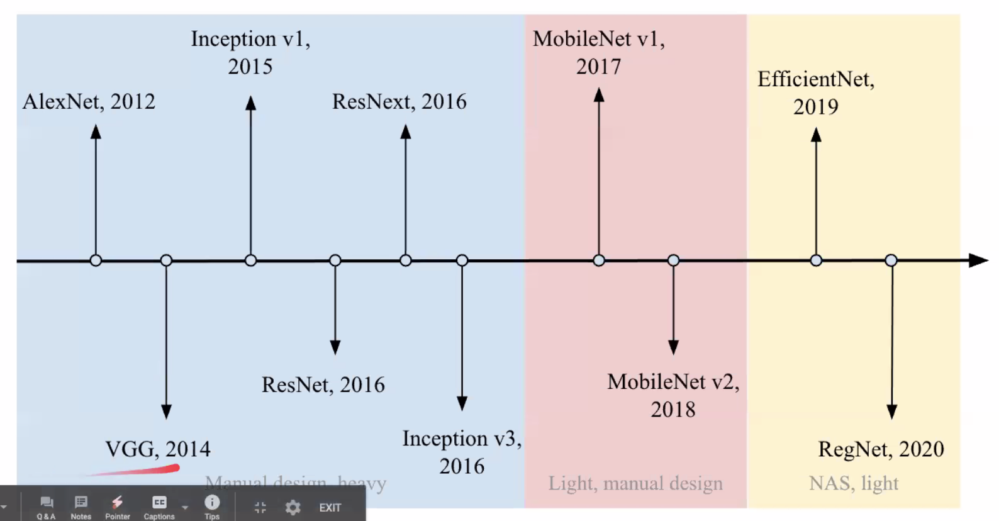
| Name | Params | |
|---|---|---|
| LeNet | 60K | |
| AlexNet | 60M | ~LeNet |
| VGG-16,19 | 140M | Uniform architecture |
| Inception v1, v2, v3, v4 | 4M | 1x1 convolutions in inception module |
| Xception | ~Inception. depthwise separable | |
| ResNet-50,101,152 | Skip connections, batch normalisation | |
| MobileNet v1, v2, v3 | For mobile phones | |
| EfficientNet B1-B7 | Found from NAS | |
| NFNets | ||
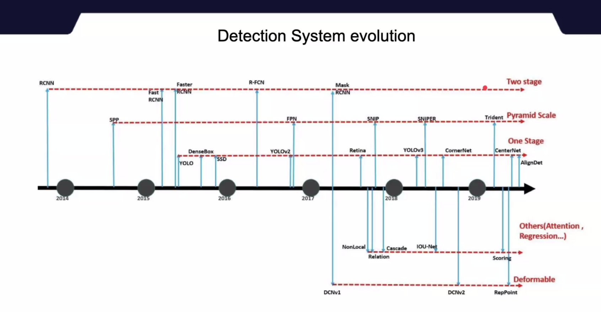
Network-in-Network (NiN)
Introduced ‘mlpconv”, global average pooling
Global average pooling sums out the spatial information, thus it is more robust to spatial translations of the input.
FCN - Fully convolutional neural network
Skip connections.
no concat unlike in U-Net
MobileNet
Consists of depthwise + pointwise convolutions (depthwise separable)
Streamlined version of Xception.
2 global hyper parameters:
- width multiplier (no. of channels): thin the network uniformly at each layer (alpha X input channel)
- resolution multiplier (input image)
Image classification
Datasets
- MNIST (Modified National Institute of Standards and Technology) — 10 classes; 28x28 grayscale
- CIFAR-10 (Canadian Institute For Advanced Research) — 10 classes; 6000 32x32 RGB examples per class
- SVHN (Street View House Numbers)
- ImageNet — 1000 classes; 299x299
Object detection
- COCO (Common Objects in Context)
- PASCAL VOC
Instance segmentation
| Name | ? |
|---|---|
| ENet | ~ResNet + Inception |
| SegNet | Upsampling, subsampling |
| SqueezeNet | |
| DeepLab v1, v2, v3 | Atrous/dilated convolutions |
| FCN | |
| U-Net | Upsampling, Copy and crop |
- VOC11, VOC12
- Cityscapes
Reidentification
Biometrics
Face recognition
Person ReID (Person Reidentification)
Deep learning
- Siamese network
Traditional
- Perceptual Image Hashing + Hamming Distance
- Keypoint matching
Feature matching
- Hamming distance
- the no. of different individual bits
- 0110 and 0111 = 1
Metric/Distance-based loss functions
- Contrastive loss
- Contrastive loss + softmax loss
- Triplet loss
- Improved triplet loss
- Quadruplet loss
- Triplet hard loss
Alignment
- AlignDlib
Datasets
Face ReID
Architecture
Facenet
LFW dataset (labeled faces in the wild)
FaceScrub
CASIA webface
Person ReID
AlignedReID
Market1501 (person reid)
CUHK
Contextual methods are where we use external information such as position, angle etc. of cameras to aid Reid
Hand Biometrics: Verification and Identification
Every human hand is unique. Most of hand geometry systems/techniques is based and 2D hand images.
Biometric speak
“Enrolment hand”
Hand biometrics processing pipeline (2D)
- Imaging techniques
- Devices
- Special device with pegs
- Special device without pegs
- Static image
- Video
- Modality
- 2D
- 3D
- Devices
- Preprocessing
- Segmentation
- Binary image
- Voronoi diagram
- Feature extraction
- Hand geometry (30 global features)
- Palmprint
- Palm texture
- Key points (valleys, finger tips) for alignment
- Feature matching
- Feature Vector
- Euclidean distance
- Absolute distance
- Hamming distance
- Normalised correlation
- Cosine similarity
- Mahalanobis distance
- Alignment-based
- Mean alignment error
- Goodness of alignment
- Others eg. hand geometry, palm texture etc.
- Feature Vector
- Classification
- RBF
- SVM
- GMM
- Neural network classifier [1]
- k-NN
- ‘SurfaceCode’
- Template distances matching
AutoAugment
Style transfer

- “Content image”
- “Style reference image” or “style image”
- “Output image”
- “Targets”
“High frequency component”
Use the intermediate layers of the CNN to get the content and style representations.
Calculate style = Gram matrix
Calculate content = Pixel values
Get style_targets tensors
Get content_targets tensors
Method 1: Naive loss
a = MSE(output_tensor - style_tensors[0])
b = MSE(output_tensor - style_tensors[1])
c = MSE(output_tensor - content_tensors[0])
d = MSE(output_tensor - content_tensors[1])
Weighted loss = (a+b+c+d)/4
Method 2: With total variation loss
Loss = naive loss + total variation loss
Total variation loss implements an explicit regularisation term on the “high frequency components of image”
Obj det / instance seg
- R-CNN
- Fast R-CNN
- Faster RCNN
- Mask RCNN
- Feature Pyramid Network
- SSD
- YOLO
- RetinaNet
- FCOS
- Focal loss for Dense Object Detection
- EfficientDet
- CenterNet
- DETR
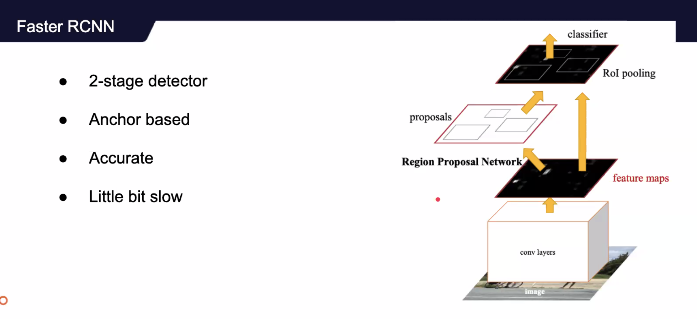
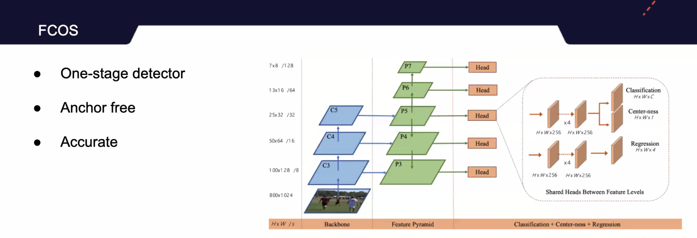

| R-CNN | 1 | |
|---|---|---|
| Fast R-CNN | ||
| Faster R-CNN | ||
| YOLO v1, v2, v3 | ||
| EfficientDet-D1D7 | CVPR 2020 | EfficientNet backbone |
| SSD | ||
| RetinaNet |
OCR
Optical character recognition
Libraries / SaaS
- Tesseract
- EAST (Efficient and Accurate Scene Text Detection)
- Ocular
- Ocrad
- Mathpix
- gocr
- OpenCV
- Google OCR API
UI
- Widget captioning
- Screen summarisation
- Command grounding
https://ai.googleblog.com/2023/02/a-vision-language-approach-for.html
Others
- Pose estimation --- 18 landmarks
- Hand pose estimation --- 21 landmarks
- Image inpainting
- Crowd counting
Pretraining tasks
- Image classification
- Data Generation Task - Eg. GANs
Models
| Year | Model | Modes | Architecture | Params |
|---|---|---|---|---|
| 2022 | Mid Journey | |||
| 2021 | Latent Diffusion | |||
| 2020 | StyleGAN | Image | GAN | |
| ViT | Image? | Transformer | ||
| ? | DeiT | Image? | Transformer | |
| 2018 | EfficientNet | Image | ||
| BigGAN | GAN | |||
| 2017 | ResNeXt-50 | Image | ||
| Mask R-CNN | Image | Object detection | ||
| 2016 | Xception | Image | ||
| Inception-v4 | Image | |||
| Inception-ResNet-V2 | Image | |||
| DenseNet | Image | |||
| 2015 | Inception-v3 | Image | ||
| ResNet-50 | Image | |||
| U-Net | Image | Encoder-decoder | ||
| DCGAN | Image | GAN | ||
| 2014 | VGG-16 | Image | 138M | |
| Inception-v1 | Image | |||
| GAN | Image | |||
| 2012 | AlexNet | Image | 60M | |
| 1998 | LeNet-5 | Image | 60K | |
| ? | Fast R-CNN | Object detection | ||
| ? | Faster R-CNN | Object detection | ||
| ? | CycleGAN | GAN | ||
| ? | GauGAN | GAN | ||
| ? | YOLO | Object detection |
Architectures
- LeNet-5
- [Conv-Tanh-Pooling]
- AlexNet
- [Conv-ReLU-Pooling]
- Dropout
- VGG
- [Conv-ReLU-Pooling]; more uniform conv
- Stacking uniform convolutional layers
- Inception-v1
- [Modular] (concat)
- 1x1
- Average-pooling
- Inception-v2
- Batch norm
- Inception-v3
- Kernel factorisation
- (label smoothing)
- ResNet
- Skip connections (add)
- Xception
- Depthwise separable
Trending
Language
The field of designing methods and algorithms that take as input or produce as output unstructured human language.
Some characteristics of natural language are
- discrete / symbolic
- compositional
- letters form words, words form phrases and sentences, sentences form documents
Vocabulary
Zero-shot — follow instructions
Few-shot — learn in-context; in-context learning
Context = neighbouring words
Semantic = what this set of letters mean
Syntax = where does a word occur in a sentence, in relation to other words, related to grammar (conjugation, pluralise)
Vocabulary size = no. of unique words
Tokens = no. of words
Pivot word = current word
Context-dependent aspects of word meaning
Downstream task = supervised learning tasks that utilise a pre-trained model or component
Vocabulary size
Sequence length
Semantic questions:
- capital & country
- currency & country
- city & state
- man & woman
Syntax questions:
- adjective to adverb
- opposite >???
- comparative
- superlative
- present participle
- nationality adjective
- past tense
- plural nouns
- plural verbs
Concepts
Ideas
- Language modelling
- predict-the-next-word (vanilla)
- cloze task (masked language modelling)
- next-sentence prediction (next sentence prediction)
- ?? cloze task with permutations ?? (permutation language modelling)
- Modelling: architecture
- RNN
- Transformer
- Autoregressive (sequential)
- Decoder + encoder (autoencoder)
- Bidirection
- Sequence-to-sequence
- Modelling: components
- Self-attention
- Modelling: algorithms (?)
-
Teacher forcing
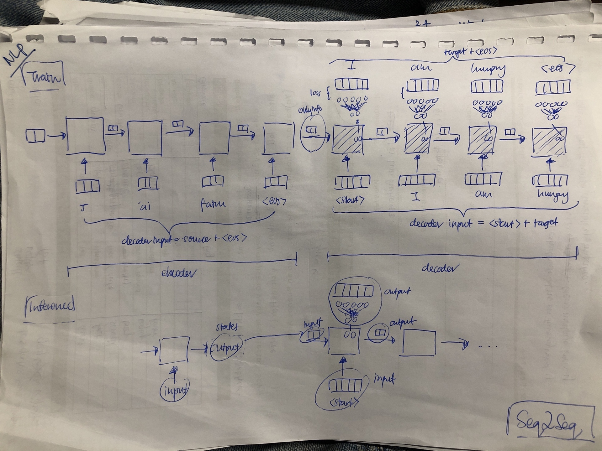
-
Tasks / applications
- Level 1
-
POS tagging

-
Constituency parsing
Break down a text into sub-phrases
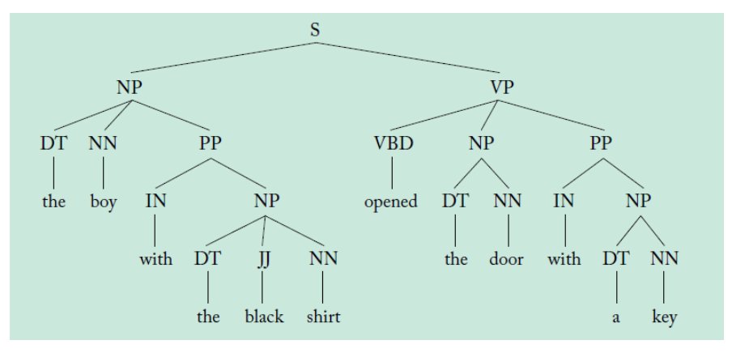
-
Dependency parsing
Analyses the grammatical structure of a sentence, starting with the root. The word that has no dependency is called the root of the sentence. The verb is taken as the root of the sentence in most cases.
-
Semantic role labeling
Semantic role labelling assigns labels to words/phrases to indicate their semantic role in the sentence. Eg. "agent", "patient", "instrument", "manner".

-
Coreference resolution
Keep track of entities
-
- Level 2
-
Text classification
-
Sentiment analysis
Classify emotions (positive or negative)
-
NER
Identify named entities (eg. people, location, organisation, number, product)
-
Language modelling
-
Semantic similarity
-
Text generation
-
Topic modelling
-
Keyword extraction
-
Event extraction
-
Relation extraction
-
Information extraction
Extracting structured information from unstructured data. Over the years, this task has been broken down into NER, coreference resolution, entity linking, relation extraction, even extraction etc.
-
- Level 3
-
Summarisation
-
Machine translation
-
Open IE
Open Information Extraction. "Open" means any kind of relationships. This is in contrast to relation extraction where the relations do not need to be specified in advance.
Born in a small town, she took the midnight train going anywhere.- (born, she, in a small town)
- (took, she, the midnight train going anywhere)
- (going, the might train, anywhere)
💡 Why do we need this? The ability to glean facts and opinions from sentences.
-
Textual entailment
aka NLI (natural language inference)
Whether Sentence A (“premise”) can be implied or contradicted by Sentence B (“hypothesis”)
(SentenceA, SentenceB) → Entailment | Contradiction | Neutral
💡 This problem is often considered an important test for the reasoning skills of ML systems
-
QA
AKA machine comprehension. QA answers natural language questions by selecting an answer span within an evidence text.
Types of machine comprehension
- Open-domain vs. closed-domain
- Abstractive vs. Extractive
- Factoid vs. Non-Factoid
-
VQA
Visual question answering
-
Image captioning
-
Chitchat dialogue
-
Paraphrasing
-

Frameworks
-
fairseq
-
spacy.io
-
Neuralcoref
-
NLTK
-
gensim
-
TensorFlow
-
Universal Language Model Fine-tuning (ULMFiT) for trf learning
-
compromise.cool
-
ONNXT5 inference-ready
question: ... ? context: ...summarize: ...translate english to french: ...
Benchmarks
GLUE score (General Language Understanding Evaluation)
ROUGE (recall-oriented understudy for gisting evaluation)
SuperGLUE
XGLUE
Processing
Preprocessing I
- n-gram
- Remove stop words
- Lowercase the text
- Strip punctuations
Preprocessing II
- Word tokenisation
- Lemmatisation
- Stemming
- Sentence segmentation
Tokenisation
Tokenisation is the splitting of text into smaller units.
Algorithms
- Character
- Subword
- BPE (Byte-Pair Encoding). By frequency. Implementations:
- WordPiece. By likelihood
- Unigram Language Model
- Syllable tokenisation
- Character n-grams (by fasttext)
- Word
Libraries
- Moses
- Whitespace
Embeddings
“Representation Learning”
Represent how something functions syntactically (position) and semantically (meaning) + relationships
How to generate a numerical representation of the tokens? Need to train with some data so that model understands the world
Subword
- Unigram Language Model
MOE (Misspelling Oblivious Embeddings)(deprecated)
Word
- Bag-of-words
- TF-IDF
- Gensim’s Word2Vec
- NNLM (Neural Network Language Model)
- Word2Vec
- Skip-Gram. word and phrase representations learned by Skip-gram model exhibits a linear structure that makes it possible to perform precise analogical reasoning using simple vector arithmetics
- CBOW
- GLoVe
- ELMo
- Contextual: The representation for each word depends on the entire context in which it is used.
- Deep: The word representations combine all layers of a deep pre-trained neural network.
- Character based: ELMo representations are purely character based, allowing the network to use morphological clues to form robust representations for out-of-vocabulary tokens unseen in training.
- LDA
- fastText
- MUSE (Multilingual Unsupervised or Supervised word Embeddings)
Sentence
- USE (multilingual)
- InferSent
- SentenceBERT
- LASER (Language-Agnostic SEntence Representations) — Trained on 90+ languages. Model has the ability to accept code-switching!
- LaBSE
Document
- Doc2Vec
- Bag-of-words
- TF-IDF
Summary
| Model | Encoding | Characteristics | Optimiser | Word-to-embedding | Available modules trained on | Getting embeddings |
|---|---|---|---|---|---|---|
| NNLM | MLP with projection layer and hidden layer | |||||
| Skip-gram | One-hot encoding of words | MLP with projection layer | Gradient descent | 1-to-1 | Wikipedia English | Output |
| GloVe | Co-occurrence matrix | SVD-like | Gradient descent | 1-to-1 | Output | |
| fastText | Character-level (subword).Character n-grams | ? | ||||
| ELMo | Character-level CNN (subword) | Bi-directional, LM | Gradient descent | 1-to-many | 5.5B tokens from Wikipedia 1.9B | Aggregate output layers |
| Transformer | Self-attention, seq2seq | ? | ||||
| BERT | LM, transformer | Aggregate encoder stack layers |
Encoding
How to encode a...?
-
Token
- One-hot
- Bag-of-x
- Aggregate of x (concat, sum)
-
Position
- absolute positional encoding
- relative position encoding
- RoPE -- Rotary positional encoding
- sinusoidal positional encoding

Representation
(Numerical representation)
Sparse representations
sparsity problem
no similarity
- One-hot encoding (1-of-V coding)
- Multi-hot encoding
- Bag-of-words
Dense representations: Embeddings
learned lookup table
idea: every word is represented by a vector
Frequency-based
- Count Vectors
- TF-IDF (term frequency - inverse document frequency)
- Co-occurence matrix
Prediction-based
- Skip-gram: learning embeddings by predicting word contexts
- CBOW
- fastText: robust embeddings using subword information
- GloVe: learning embeddings of size 100 from word co-occurrence (Global Vectors for Word Representation)
- ELMo: Embeddings from Language Models (pre-trained)
- PPMI matrix decomposition (using SVD) to get word embeddings
- Skip-Thought Vectors
- Doc2Vec
- USE (universal sentence encoder)
- NNLM (neural network language model)
Language modelling
Difference between encoder and language model is that encoders output a vector whereas LMs output a sequence of tokens.
https://web.stanford.edu/class/cs124/lec/languagemodeling.pdf
https://lilianweng.github.io/lil-log/2019/01/31/generalized-language-models.html
https://syncedreview.com/2017/09/10/language-model-a-survey-of-the-state-of-the-art-technology/
- Why model language?
- Types of language models
- Statistical language model
- Neural language models
- How?
- Types of fine-tuning
- What did we learn?
Why model language?
Natural language is not deterministic unlike programming language. This randomness in the sequence of words can be modelled probabilistically.
Types of language models
- Statistical language model (count-based)
- Neural language model (continuous-based)
Statistical language model
Model
We first fix to be the length of this sequence of words. A language model is the (joint) probability distribution over a sequence of words
where is any word available in the language's vocabulary and are the parameters of the model and which can be conveniently broken down into
or (for better readability)
The way we model language is that the choice of the next word ("next-word prediction") depends on the previous words which have said ("realise").
Now let's compute the joint probability
or rather let's try to predict the next word, say finding out if the next word is the:
which equals to (by Bayes):
We could take the counts based on our data:
But this is impossible
💡 Why ah? Because if they don't exist in our data, doesn't mean they don't occur naturally.
Markov assumption as approximation
In the -th order Markovian assumption, we assume the next word depends on the last words.
We simplify the problem to instead find ("bigram model")
or ("trigram model")
or
or to generalise, we simplify the problem to be
where is the number of preceding words before . Another way to look at this is:
The value then represents if its a unigram model (), bigram () or -gram.
Solution to optimisation problem
A common solution is to use MLE. Below is for a bigram model.
Tweaks
- Laplace smoothing (for unseen words)
Problems
- Sparsity
- Curse of dimensionality
Neural language models
Model
Architectures
-
FFNN
-
RNN
-
Transformers
The key/value/query concepts come from retrieval systems. For example, when you type a query to search for some video on Youtube, the search engine will map your query against a set of keys (video title, description etc.) associated with candidate videos in the database, then present you the best matched videos (values). Source
How?
-
Pre-train, framed as a language modelling
Pretraining is usually down on a huge corpus.
-
Applying to downstream tasks:
- Fine-tune (specialise), framed as predicting conditional probabilities
- Discriminative tasks
- Generative tasks
- Abstractive tasks
- Feature-based tasks
- Fine-tune (specialise), framed as predicting conditional probabilities
1. Teach the model the world ("pre-training")
A language model is the statistical model that...
-
Native language
-
What's the next word? What are the next words? ("causal language modelling" / "next-token prediction")
GPT, GPT2, GPT3, CTRL, Transformer-XL, Reformer, XLNet, ProphetNet
-
Cloze ("masked language modelling"). Predict only the masked words.
BERT
-
Can this be the next sentence? What could be the next sentence? ("next sentence prediction") (CLM?)
BERT
-
Were these 2 sentences swapped? If swapped, can I still figure out the context? ("sentence ordering prediction")
-
Define what task I want to do, then work on it ("instructional language modelling")
CTRL, T5, GPT3?
-
Correct my sentence. Which words did I miss out? ("correctional language modelling")
-
Summarise the content ("summarisational")
- Mask a span of tokens as a single mask token
- GSG (Pegasus)
-
Downstream tasks ("fine-tuning")
-
Which words were replaced? Which words are "natural" to you? ("adversarial language modelling")
-
Learning with images and sounds etc. ("multimodal")
-
Understanding the context
XLNet
-
Reading / understanding long texts ("high attention")
Transformer-XL, Longformer
-
Factual language modelling
-
-
Learning a new language ("cross-language modelling" / "translation language modelling")
- (SentenceInLanguageA, SentenceInLanguageB)
What is the model built for?
- Generate only (decoder? only, autoregressive). Eg. generate text
- Understand (autoencoder) and possibly use it for something useful next time. Eg. Sentence classification.
- Understand and generate (sequence-to-sequence). Eg. translation, summarisation
Data sources:
Common sources are Wikipedia, web news, web question-answer pages and discussion forums.
2. Applying / Fine-tune / datasets / downstream tasks / see how well you trained the model
(SuperGLUE tasks)
-
Discriminative tasks
Grammar
- CoLA (GLUE)
Sentiment analysis
- SST-2 (GLUE)
-
Generative tasks
- Summarisation
- ELI5
- XSum
- ConvAI2
- CNN/DM
- Summarisation
-
Unclassified
- Sentence similarity / paraphrase
- STS-B (GLUE)
- QQP (GLUE)
- Question answering
- SQuAD
- QNLI (GLUE)
- Textual entailment
- MNLI (GLUE)
- Translation
- WMT
- Sentence similarity / paraphrase
Speed
Reformer
-
Continual learning
-
Understanding the context first (dual encoder, one decoder)
-
Lack of information (data)
-
Causal language modelling
AKA next-word prediction, next-token prediction
-
Mask language modelling
- Randomly mask 15% of input tokens
- Model to predict the masked tokens
-
Next-sentence prediction
Ever example is a tuple of
((Sentence A, Sentence B), B is next | B is not next)

https://huggingface.co/transformers/model_summary.html
This categorisation is based on the question "how do you train/teach these models?" Note that it does not mean that they do not share the same architecture.
Types of fine-tuning
https://ruder.io/recent-advances-lm-fine-tuning/
- Adaptive fine-tuning — specialise to target domain
- Pre-training
- Adaptive fine-tuning on target data
- Fine-tuning on task labels
- Behavioural fine-tuning — specialise to target task
- Pre-training
- Behavioural fine-tuning on relevant tasks
- Fine-tuning on task labels
- Parameter-efficient fine-tuning — reduce model size
- Text-to-text fine-tuning — ?
What did we learn?
- Pretraining, then fine-tuning
- MLM
- More data is good
Topic modelling
Resources
BERT-based: https://github.com/MaartenGr/KeyBERT/
https://github.com/boudinfl/pke
| Method | Need more than 1 doc | Algorithm | Output: Doc-Topic | Output: Term-Doc | Output: Term-Topic | Output: similarity matrix |
|---|---|---|---|---|---|---|
| TF-IDF | ✓ | Frequency-based | ✓ | |||
| NMF | ✓ | SVD of term-docV = WH | ✓ | ✓ | ||
| LDA | ✓ | Probabilistic generative modelling | ✓ | ✓ | ||
| LSA | ✓ | SVD of term-docX = UΣVT | ✓ | ✓ | ||
| RAKE | Word co-occurrences, scoring system | |||||
| TextRank | Similarity (word co-occurrences) | ✓ | ||||
| Bag of words | Word frequency | |||||
| POS tagging | Linguistic approach | |||||
| NER tagging | Linguistic approach | |||||
| Random Projections |
Theory
Distributional hypothesis - The distributional hypothesis in linguistics is derived from the semantic theory of language usage, i.e. words that are used and occur in the same contexts tend to purport similar meanings
Semantic similarity
Vector space model - representing text documents as vectors
TF-IDF
(Term Frequency - Inverse Document Frequency)
words which are rare are the ones that actually help in distinguishing between the data, and carry more weight
- Get a list of unique words.
- For every word in every document, calculate
Document A: The car is driven on the road.
Document B: The truck is driven on the highway.

NMF
(Nonnegative Matrix Factorisation)
GloVe
- svd
RAKE
(Rapid Automation Keyword Extraction)
- Get tokens by partitioning using stop words and punctuation marks
- Get co-occurrence matrix
- Simple scoring
Degree(“keyword”) = sum of no. of co-occurrences = 3+3+1+1
Frequency(“keyword”) = cell entry in co-occurrence = 3
Score(“keyword”) = degree/frequency

LDA
(Latent Dirichlet Allocation)
- Model the data as observations that arise from a generative probabilistic process that includes hidden variables (topics/themes)
- Infer the hidden structure using posterior inference
TextRank
Inspired from PageRank
Construct a (cosine) similarity matrix by comparing their vector representations (summing/average of all word embeddings in every sentence).
| Sentence1 | Sentence2 | Sentence3 | |
|---|---|---|---|
| Sentence1 | |||
| Sentence2 | |||
| Sentence3 |
Construct a (cosine) similarity matrix by comparing their vector representations or other word occurrences methods.
| Word1 | Word2 | Word3 | |
|---|---|---|---|
| Word1 | |||
| Word2 | |||
| Word3 |
Lastly, rank.
Sequence modelling
Motivation
Bag-of-words has no order
Sequence modelling design criteria
The model must be able to
- Handle variable-length sequence
- Maintain information about the order
- Share parameters across the sequence
- Track long-term dependencies
Backpropagation through time
Backpropagation through time involves many multiplication of the weight matrices and gradient such that
- Many values > 1: exploding gradients
Gradient clipping
- Many values < 1: vanishing gradients
Activation function - use ReLU
Weight initialisation - weights to Identity matrix ?, bias to zero
Network architecture - gates cells
LSTMs and GRUs
Information is added or removed through structures called gates.
- Forget
- Store
- Update
- Output

Attention
Decoder has access to all the states in the encoder. Network places attention on different parts of the input sentence.
NER
Named Entity Recognition
- CoNLL
Sentiment analysis
- SST (Stanford sentiment treebank)
- IMDB
- Yelp
QA
- Stanford Question Answering Dataset (SQuAD)
Summarisation
Machine translation
Terminologies
Source language
Target language
parallel corpus / bi texts - a pair of texts such that one is a translation of the other
Deceptive cognates
Syntactic duplicates
Morphology - analysis of structure of words
Syntax - analysis of structure of sentence
Syntactic analysis - an analysis of the relative grammatical function of different words in the sentence
Lemma - dictionary form
Word sense - no of meanings per word
“Stemming” - get pseudo roots (Porter stemming, 1980)
pivot language - an intermediate natural language
interlingua - an artificial language with abstract representation
polysemy - coexistence of many possible meanings for a word/phrase
sentence alignment

Theories
- Meaning is not formally defined but corresponds to the way words are used
- It should respect the main characteristics of the original text, the tone and style, details of its ideas, overall structure
Examples
The chicken is ready to eat
There was not a single man at the party
History
Rule-Based
- direct translation system
- transfer system
- interlingua
1940s - idea of autatic translation
1940s-1960s - advent of computers. naive approaches
1965-1990 nothing afterv alpac report
1990s - Statistical Machine Translation
2014 - Neural Machine Translation
Example-based translation
translation by analogy
translate: training is not the solution to every problem

Statistical machine translation
using word alignment
- Word-based translation
- Phrase-based translation
- Syntax-based translation
- Hierarchical phrase-based translation
IBM Model 1
all initial alignments have equal probability
IBM Model 2
take into account relative positions
IBM Model 3
take into account 1-n correspondences
IBM Model 4
consider moveable parts of a sentence
IBM Model 5
higher accuracy due to more complex calculations
Segment-based machine translation
Neural machine translation
Back translation
Translate from target language to source language
Sentence alignment:
two documents. Align the sentence so that we have sentence-level training examples
Models
- Translation language modelling: MLM pre-training has been extended to the multilingual setting by modifying MLM training to include concatenated translation pairs
- Seq2seq with attention
- Transformer
- Conv Seq2Seq
- Unsupervised MT
- LASER, from facebook (multilingual sentence embedding)
- MarianMT (1000 models)
- XLM
Metrics
BLEU - Bilingual Evaluation Understudy Score: metric for evaluating a generated sentence to a reference sentence.
Datasets
- WMT (Workshop on Statistical Machine Translation)
- OPUS http://opus.nlpl.eu
- CCMatrix
- CCAligned
- ParaCrawl
Coreference
Datasets:
- Winogrande
- DPR
- WSC273
Reading comprehension
- SQuAD
- DROP
- OBQA
- BoolQ
Paraphrase
- MRPC
- QQP
- PAWS
- STS-B
Commonsense
Datasets:
- CoPA
- HellaSwag
- PiQA
- StoryCloze
NLI
Datasets:
- MNLI
- ANLI
- CB
- RTE
- SNLI
- WNLI
- QNLI
Language models
Autoregressive LM
In this language model, every possible word is dependent on the previous word.
The joint probability of a sequence of words is given by:
The Bidirectional LM is also based on autoregressive LM.
Contextual LM
Pretraining tasks
[MASK] tokens are tokens to predict
(Traditional) Language modeling (LM)
Given a word, predict the next word.
Egs: GPT-X, Transformer XL
Masked language modeling (MLM)
Erase some words randomly in the input, then predict the erased words during pretraining.
Egs: BERT, SpanBERT
Next Sentence Prediction (NSP)
??? (how is this different from SOP?)
Egs: BERT
Sentence Order Prediction (SOP)
Predict if two sentences are contiguous. Positive samples are contiguous fragments from a document; negative samples are the reverse order.
Egs: ALBERT
Denoising autoencoder (DAE)
Add noise to the input, reconstruct the input containing the noise. Noise includes erasing words, shuffling.
Egs: BART, Pegasus
Permuted language modeling (PLM)
??
Egs: XLNet
Transformer models: an introduction and catalog
Fine-tuning
-
Task-specific
-
Instruction-tuning / instruction fine-tuning 1
Creating a dataset of instructions from scratch to fine-tune the model would take a considerable amount of resources. Therefore, we instead make use of templates to transform existing datasets into an instructional format.2
Instruction-tuned language models demonstrate a remarkable ability to generalise zero-shot to new tasks.
Example: FLAN — Fine-tuned LAnguage Net
-
Though process fine-tuning 3
Decompose the problem into steps
-
PaL (Program-aided Language) 4
Decompose the problem into programmatic steps
-
RLHF (Reinforcement Learning from Human Feedback)
Models
"Foundation language models" / PFM (Pretrained Foundation Models) / LLMs (Large Language Models)
| Year | Model | Arch | Pretraining | Params | Applications |
|---|---|---|---|---|---|
| 2023 | GPT-4 | ? | ? | ||
| Alpaca | ? | ? | Instruction-following | ||
| LLaMA | ? | ? | 7B,13B,65B | ? | |
| OpenChatKit | ? | ? | ? | ? | |
| 2022 | GPT-3.5 | Decoder | LM | 175B | Code generation, dialog |
| GPT-NeoX-20B 1 | ? | ||||
| OPT | ? | ||||
| LAMDA | Decoder | LM | 137B | General language modelling | |
| ChatGPT | Decoder | LM | 175B | Dialog | |
| BLOOM | Decoder | LM | 176B | Code generation | |
| Minerva | Decoder | LM | 540B | Mathematical reasoning | |
| Chinchilla | Decoder | LM | 70B | Dialog | |
| PaLM 2 | Decoder | LM | 62B,540B | (general language tasks) | |
| 2021 | HTML | Encoder/Decoder | DAE | 400M | HTML prompting |
| Gopher 3 | Decoder | LM | 280B | General language modelling | |
| 2020 | GPT-34 | Decoder | LM | 175B | Code generation, audio generation |
| Big Bird | Encoder | MLM | - | Longer sequence | |
| ELECTRA | Encoder | RTD | 110M-330M | Longer sequence | |
| mBART | Encoder/Decoder | DAE | 110M | Translation | |
| 2019 | XLM-RoBERTa | Encoder | MLM | 270M-550M | Translation, cross-lingual tasks |
| BART | Encoder/Decoder | DAE | 110M | Text generation | |
| ERNIE | Encoder | MLM | 114M | Entity recognition | |
| GPT-2 | Decoder | LM | 1.5B | Text generation, (general language tasks) | |
| Transformer XL | Decoder | LM | 151M | (general language tasks) | |
| RoBERTA | Encoder | MLM | 356M | Language understading, QA | |
| T5 | Encoder/Decoder | DAE | 11B | MT, QA, abstractive summarisation | |
| Pegasus | Encoder/Decoder | DAE,MLM | 223M-568M | Summarisation | |
| ALBERT | Encoder | MLM/NSP | 12M-60M | Language understading, QA | |
| DistilBERT | Encoder | MLM/NSP | 66M | Language understading, QA | |
| XLNet | Decoder | PLM | 117-360M | (general language tasks) | |
| 2018 | BERT | Encoder | MLM/NSP | 110M | Language understading, QA |
| GPT | Decoder | LM | 117M | Text generation | |
| 2017 | Transformer | Encoder+Decoder | |||
| ? | ELMO | RNN | LM | ||
| ? | seq2seq | RNN | |||
| ? | UniLM | ? | |||
| ? | ERNIE | ? |
Encoder or Decoder refers to the Transformer encoder or decoder.
GPT-NeoX-20B: An Open-Source Autoregressive Language Model 2: PaLM: Scaling Language Modeling with Pathways 3: Scaling Language Models: Methods, Analysis & Insights from Training Gopher 4: Language Models are Few-Shot Learners
Prompting
Pre-trained language models can solve tasks using zero-shot or few-shot prompting as in the paper Language Models are Few-Shot Learners.
This technique requires prompt engineering — designing tasks that look like the data the model has seen during training.
- Chain-of-Thought 1
- Retrieval-Augemented QA
- Self-Ask - (Press et al 2022)
Digital signal processing
Terminologies
-
Bit depth
How many different values that can be recorded. 8/16/32/64-bit
-
Sampling rate = sample frequency
No of readings per second. 44.1kHz (CD Quality audio), 48, 96kHz
-
Bit rate
No. Of bits encoded per sample per second. Bits per second. 64-128 kbps
Bits per sample x samples per second x no. of channels
-
Bandwidth
Speed at which you can transmit data.
-
Channels
1 = mono. 2 = stereo.
librosa automatically combines into mono
-
File size
Bit rate x duration / 8
Formats
Aac
Mo3
Wav - uncompressed
Models
| Year | Model | Arch | Pretraining | Params | Applications |
|---|---|---|---|---|---|
| 2022 | Whisper | Transformer | ? | ? | ? |
Graph analysis
Community detection
Note that data is a tuple of (undirected?). (In usual clustering task with no edges, these graphs are called "trivial graphs")
Partition network such that
- inter-group edges are sparse
- intra-group edges are dense
Hierarchical clustering
Define similarity between nodes
- no. of node disjoint paths ???
- no. of edge disjoint paths ???
- ...
?
Problem
Girvan-Newman algorithm
Hierarchical divisive method.
- Start with whole graph
- Find edge whose removal will partition the graph. Use edge betweenness.
- Repeat until single nodes
Edge betweenness
is a measure of edge importance, i.e. how important an edge is in keeping the graph connected such that if we cut this edge, it makes a lot of difference and will create more meaningful partitions.
Algorithm to compute edge betweenness
Time complexity
- For a vertex, calculate betweenness of every edge .
- Final score .
- Remove the edge with the highest betweenness.
- Repeat for the other edges. .
Ranking
Goal is to rank the nodes in a directed graph .
PageRank
Limitations
-
Dead end → Jump to a random page
from
0.5 0.5 0 0.5 0 0 0 0.5 0to
0.5 0.5 0.33 0.5 0 0.33 0 0.5 0.33 -
Spider trap → Teleport
-
Measures generic popularity of a page → Topic-specific PageRank
-
Only 1 measure of importance → Hubs-and-Authorities
-
Susceptible to link spam → TrustRank
Models
Models
| Year | Model | Modes | Architecture | Params |
|---|---|---|---|---|
| Graph Transformer Network |
Pretraining tasks
Models
Keywords: MLLM (Multimodal Large Language Model)
| Year | Model | Modes | Architecture | Params |
|---|---|---|---|---|
| 2023 | PaLM-E 1 | Vison + language + planning (robotic) | 562B | |
| USM 2 | Audio | |||
| Kosmos-1 3 | Vision + language | |||
| Flamingo | ||||
| PaLI | ||||
| 2022 | DALL•E 2 | Vision + text | Transformer | |
| 2022 | Stable Diffusion | Vision + text | ||
| 2021 | DALL•E | Vision + language | Transformer | |
| CLIP 4 | Vision + language | Transformer | ||
| Stable Diffusion | Vision + language | |||
| DALL•E | Vision + text | Transformer | ||
| ? | GPT-3 | Vision + language | Transformer | |
| ? | GPT | Vision + language | Transformer | |
| 2016 | Show and Tell | Vision + text |
Loss functions
MSE (regression)
General:
univariate, 1 example
univariate, multiple examples
?
multivariate, 1 example
multivariate, multiple examples
Cross entropy loss (classification)
Binary cross entropy / negative log loss
Formulated by Claude Shannon, this loss function compares how different two distributions (true and predicted) are.

Gradient descent with
- Logistic regression (= binary cross entropy)
- Softmax regression ( = softmax cross entropy)
💡 Note that softmax cross entropy is a generalisation of binary cross entropy.
is vector of logits with classes.
General:
Binary cross entropy (2-class)
univariate, 1 example
univariate, many examples
multivariate, 1 example
multivariate, many examples
With L2
MLE & MAP
- All the loss functions below use MLE (???)
- L2 regularisation (not sure about L1) is actually finding the of a distribution whose prior on is a normal distribution! (MAP interpretation is we are maximising a combination of prior and likelihood functions).
L1
L2
Given , , , , , find the final after one SGD update.
Label smoothing
Binary / categorical cross entropy:
Cross entropy with label smoothing regularisation:
with smoothing parameter such that
Metrics
MRR
Mean reciprocal rank
If MRR@10 is 0.8, it means on average (across users), and if I predict 10 items, the first relevant item will be located at position 1/0.8 = 8.
Supervised learning
Specifically for deep learning:
Given a labelled training dataset
minimise the objective function
where is the regularisation term.
Semi-supervised learning
Specifically for deep learning:
Given a labelled training dataset
and another unlabelled dataset
minimise the objective function
where
- is the regularisation term
- defines the targets for unlabelled data
Good for small amount of data and large amount of unlabelled data.
Weakly-supervised learning
Labelled data are noisy and imprecise.
Workflow
- Process unlabelled data to generate accuracies of label sources
- Generate training labels
- Train a powerful model
Frameworks
Snorkel: aggregate noisy labelling function outputs to automatically label training data
FlyingSquid
FixMatch
Self-supervised learning
Specifically for deep learning:
- Masked language modelling
- VAE and GAN are generative SSL methods
- Contrastive learning
- SimCLRv2
Training a model using labels that are inherent in the data, rather than requiring a separate set of labels.
The task that is used for pretraining is the pretext task. The tasks that we then use for fine-tuning are called downstream tasks. This is also transfer learning.
- Colorisation
- Guessing image patches
- Placing frames in thr right order
- Inpainting
- Classify corrupted images
Choosing a pretext task
The tasks that you choose needs to be something that, if solved, would require an understanding of your data which would also be needed to solve your downstream task.
Clustering algorithms
“Meaningful collections / meaningful groups”
“How you choose helps you understand more about them”
= size of data
= no. of clusters
= no. of iterations
💡 Centroid an artificial point in a cluster
💡 Clustroid is an existing datapoint closes to all other points in a cluster
Uses:
- Market segmentation
- Medical. imaging
- Anomaly detection
- Image segmentation
- Generalisation (less popular together with more popular videos)
- User clustering
Why transform data?
In clustering, you calculate the similarity between two examples by combining all the feature data for those examples into a numeric value. Combing feature data requires that the data have the same scale.
Types
- Centroid-based
- k-means & k-means++ (for choosing seeds)
- FAISS (facebookresearch / faiss)
- Density-based
- DBSCAN
- OPTICS
- Distribution-based
- Hierarchical
- Unclassified
- Mean shift
Metrics
- Davies-Bouldin index
- Silhouette score
- Gini coefficient: measure degree of heterogeneity
Intro to DL
Terminologies
- architecture = model = network = algorithm
- input = image = tensor = image matrix
- output = convolved feature
- input channels = input maps = depth
- output channels = feature maps = activation map
- filter = kernel = weights = feature extractor = convolution = feature detector
- feature = structure (low-level, high-level)
- resolution = dimension = size
- depth = no. of channels/filters
- class
- example = observation = sample
- Epoch = training step
- Batch = iteration
- Filter
- Downsample = encode
- Upsample = decode
Why deep learning?
- Classical ML: Features are hand engineered. Hand engineered features are
- Time-consuming
- Brittle
- Not scalable
- DL: Features are learned. Deep learning is able to extract salient information from raw data by developing a hierarchical representation of features. This automatic feature extraction is an intrinsic component of the architecture. For this reason, deep learning is often described as representation learning.
Why now?
- Big data. Data is becoming more pervasive.
- Hardware
- Software
Universal approximation theorem
A feedforward network with a single (hidden) layer is sufficient to approximate, to an arbitrary precision, any continuous function. (Neural networks are excellent function approximators.)
https://twitter.com/gabrielpeyre/status/1304645917648269312
Normalising feature values
- Roughly zero-centered, -1 to 1 often works well and roughly all our inputs are of the same scale.
- Helps gradient descent converge. Avoid NaN
- Avoiding outlier values can also help
- Can use:
- Linear scaling
- Log scaling
- Max min clipping
Networks
Perceptron (no hidden layer, with nonlinearity)
Deep neural network (multi-layer perceptron)
Perceptron components
- Inputs + Weights + bias. A high bias means that a neuron is more likely activated despite its weights.
- Linear combination
- Non-linearity (nonlinear activation functions)
- Output
Note that a combination of linear models is still linear ie b + wx + wx.
Optimisation
Solving the weights of a network with loss function is a non-convex optimisation. Proper initialisation matters. If network is composed of differentiable functions, then we can probably learn from it using gradient descent.
Gradient descent
https://www.youtube.com/watch?v=aircAruvnKk
Compute gradient using backpropagation = chain rule. How does a small change in one weight affect the final loss? Should a weight get nudged up or down? Which ones give most bang for buck (which one will have more effect on the cost function)?
We can compute the best direction that is mathematically guaranteed to be the direction of the steepest descend. This direction is related to the gradient of the loss function.
Backpropagation
Backpropagation can be thought of as gates communicating to each other, whether they want their outputs to increase or decrease, so as to make the final output value higher or lower.
Backpropagation will ensure that weights that need to be updated are updated proportionately to the loss function. Gradient signals are “distributed” to everyone.
Gradient on x*w
If x were extremely large (no preprocessing done), gradient of w will be very large too. As a result, one needs to compensate by lowering the learning rate by that factor. Another method is to perform batch normalisation. Gradients can also vanish because each additional layer can successfully reduce signals through activation functions like sigmoid. One way to prevent this is to use other activation functions like ReLU.
Learning rate
If you set your learning rate too small, you’re not really trusting your gradient on each step. What can happen is that you can get stuck in local minima, because you’re not being as aggressive as you should be to escape them. If you set your learning rate too large, you can overshoot completely and diverge. Setting the learning rate can be challenging in practice such that you avoid the local minima but small off such that you still converge.
How to set learning rate?
- Try different learning rates
- Design a learning rate that ‘adapts’ to the landscape.
- Learning rate schedulers
- One-fit cycle
- Depends on batch size (larger batch size means you are trusting the gradient more so learning rate can be increased)
Learning rate schedulers
- Constant
- Time-based decay
- Step decay
- Exponential decay
- Lambda
- Multistep LR
- Cosine annealing LR
- ReduceLR on plateau
- Cyclic
Gradient descent optimisation algorithms
- Vanilla
- Momentum
- NAG
- RMSProp
- Adam
- RAdam
- SWA
(Batch) gradient descent, mini-batch gradient descent, stochastic gradient descent
Gradient in gradient descent is expensive to compute over all data points. Stochastic gradient descent computes over a single data point chosen randomly. The term "stochastic" comes from the fact that the gradient based on a single training sample is a "stochastic approximation" of the "true" cost gradient. The downside of using a single point is that it’s going to be too noisy. Middle ground is to take a mini-batch, where true gradient is approximated by taking the average of the gradients.
- More accurate estimation of gradient
- Smoother convergence
- Allows for larger learning rates (because we trust the gradients more)
Stochastic gradient descent can be also taken to mean batch gradient descent.
Overfitting & regularisation
- Dropout: randomly set some of the activation of the hidden neurons to 0 with some probability (usually 50%)
- Early stopping
- JUMP START
Tensor libraries
Frameworks
- NumPy
- PyTorch & TorchScript
- TensorFlow
- JAX = JIT + Autograd + XLA
- Numba
- Keras
- PyTorch lightning
Why are NumPy arrays efficient?
- Data is stored stored contiguously (unlike Python)
- Spatial locality (???)
- Because of contiguity, vectorised instructions can be used (Intel's SSE and AVX).
View
X.view()
To check if an array is a view of another
y1.base is y
If none, it’s a copy
Creation
x = np.zeros((3,4,5)) # zeros
x = np.ones((3,4,5)) # ones
x = np.random.rand(3,4,5) # uniform [0,1]
x = np.random.randint(0,21,15)
x = np.random.normal(size=(3,4,5)) # N(0,1)
x = np.random.rand(4) # U(0,1)
x = np.array([0,0,0]) # from array
x = np.arange(0,15)
x = np.eye(3) # diagonal 3x3 matrix ones
x = torch.zeros((3,4,5)) # zeros
x = torch.ones((3,4,5)) # ones
x = torch.rand(3,4,5) # uniform [0,1]
x = torch.randn(3,4,5) # N(0,1)
x = torch.tensor([3.,4.,2.]) # from array
x = torch.empty(1,5,3) # zeros
Mathematical operations
x.dot(x) # matrix multiplication
x.argmin() # index of min
torch.matmul(x, y)
torch.mm(x, y)
Info
x.shape
x.size()
Shape manipulation
x = x.reshape(1,-1)
x = x.reshape(1,5,2)
np.reshape(x,(1,5,2))
x = x.view(1,5,-1) reshape to (1,5,?) where ? Is inferred
np.squeeze([[[[1,2,3,4]]]])
TOrch:
xy.squeeze()
Permute
x.transpose(2, 0, 1)
x.permute
Expand dimension
x[:, np.newaxis]
np.expand_dims(axis=)
x.expand()
Sorting
x.sort(axis=)
np.argsort(a)
Concat
torch.cat()
Mask
https://stackoverflow.com/questions/19984102/select-elements-of-numpy-array-via-boolean-mask-array/58365403#58365403
Gotchas
- Gradiemts are accumulated. Must zero accordingly
with torch.nogradensures that in manual gradient update, a computation graph for differentiation isnt created- Optimiser.step() updates weights for you
- Forward and callable
- Requires_grad
- When inheriting from nn.Module, the weights must be wrapped with torch.nn.Parameter() to be automatically registered as parameter. (Not sure if this is the right way but it’s something like that)
Sparse matrices
-
CSR (compressed sparse column)
Write-once-read-many
matrix is represented using three 1D arrays for the non zero values
value = [5 8 3 6]
col = [0 1 2 1]
row = [0 0 2 3 4]
Fast row access and matrix-vector multiplications.
-
LIL (list of list)
[(row,col,val), (row,col,val), (row,col,val)] -
DOK (dictionary of keys)
{(row,col): val, (row,col): val} -
COO (coordinate list)
(row,col,val), (row,col,val), (row,col,val)] -
CSC (compressed sparse row)
-
Block sparse row
Code
from scipy.sparse import csr_matrix, csc_matrix
from scipy.sparse import random
matrix = random(3,3, format='csr', density=0.4)
.todense()
.toarray()
.nnz
.data
Transfer learning
Definitions / intuitions
- "Given a loss function, theoretically, the random model will have a higher loss (think loss landscape). This is what is meant by “knowing to do something”."
- “Transfer learning is the idea that, if you know how to solve a task well, you should be able to transfer some of that understanding to solving related problems.”
- “Transfer learning is a means to extract knowledge from a source setting and apply it to a different target setting.”
- Train a model with a smaller dataset,
- Improve generalisation, and
- Speed up training.
- Transfer learning is a technique that takes a piece of a model that has already been trained on a related task and reusing it in a new model. The intuition behind this idea is, that also for other tasks or dataset the first layers of neural networks learn similar concepts to recognise basic structures such as blobs and edges. This concepts do not have be trained again from scratch when using pretrained models.
- Transfer learning is a technique in machine learning in which we apply knowledge from a source domain (e.g. ImageNet) to a target domain that may have significantly fewer data points. In practice, this generally involves initialising a model with pre-trained weights from ResNet, Inception, etc. and either using it as a feature extractor, or fine-tuning the last few layers on a new dataset. With transfer learning, these models can be re-purposed for any related task we want, from object detection for self-driving vehicles to generating captions for video clips. Use when:
- Similar domain
- Small dataset
- Extract feature
- Fine-tune last few layers
- The underlying idea of transfer learning is that neural net architectures will generalise for similar types of problems: for example, that many images have underlying features (such as corners, circles, dog faces, or wheels) that show up in a variety of different types of images. In contrast, the underlying idea of promoting neural architecture search for every problem is the opposite: that each dataset has a unique, highly specialised architecture it will perform best with.
How can knowledge be transferred?
- From a task to a downstream task (via sequential transfer learning or multitask learning)
- From a domain to another domain (domain adaptation)
- From a language to another language (cross-lingual learning)
Who can use?
- Small data
- Pathetic computer
How to fine-tune?
Gradual unfreezing
Discriminative learning rates
One-cycle training
ImageNet pretraining has been quite successful
No. Of layers
Batch normalisation
ReLU
Dropouts
- architecture
- Keep
- Modify
- Weights
- Don’t change (feature extraction)
- Modify (fine-tuning the weights)
- Manner
- One layer at a time (freezing)
- Start with low learning rates
- Regularisation (One way to minimise catastrophic forgetting is to encourage target model parameters to stay close to the parameters of the pretrained model using a regularisation term)
Given a loss function, theoretically, the random model will have a higher loss (think loss landscape). This is what is meant by “knowing to do something”.
Weight initialisation
https://www.deeplearning.ai/ai-notes/initialization/
On weight initialisation in deep neural networks
Motivation
Backpropagated gradients are either amplified or minimised. As a results, training is slowed down or diverges.
Goal
Gradient signal should not be multiplied by values that are too small or too large in any layer.
Proposition
It is proposed that across layers:
- Mean of activations should be 0 (so that it’s easier to determine what is the right variance to use for different nonlinear activation functions)
- Variance of nonlinear activations is the same (intuitively, it maintains magnitude of the signals)
such that the resulting backpropagated gradient signal will not be multiplied by values too small or too large in any layer.
Assumptions
- Weights are IID.
- Inputs to the first layer are IID with mean 0 and variance 1.
- Weights and inputs are mutually independent.
Types of initialisation
- Initialise with the same number = symmetrical
- Cases
- All zeros => network will not learn
- All ones => does not break symmetry
- All small => vanishing gradients; network will not learn
- All big => exploding gradients
- Cases
- Initialise with different numbers i.e. random
- Cases
- Too large => exploding gradients
- Too small => vanishing gradients
- Just nice. We want the activations to have same mean and variance across, to prevent exploding or vanishing gradients
- Cases
Initialisations to use for nonlinear activation functions
-
tanh: Xavier
-
sigmoid: Kumar
-
ReLU: He
Initialisation
Xavier initialisation
He initialisation
Others
- Xavier uniform
- He uniform
- Standard normal
- Uniform
- Zeros / other constants
- Initialising all the weights with zeros leads the neurons to learn the same features during training.
- Thus, both hidden units will have identical influence on the cost, which will lead to identical gradients. Thus, both neurons will evolve symmetrically throughout training, effectively preventing different neurons from learning different things.
Terms
Kaiming = Kaiming He
Glorot = Xavier Glorot
Bonus questions
Lack of data?
- Open source data
- Augmentation
- Synthetic data
- Transfer learning
Deep Learning Interviews: Hundreds of fully solved job interview questions from a wide range of key topics in AI
https://arxiv.org/abs/2201.00650
Frameworks
TensorFlow, Keras
PyTorch, PyTorch Lightning, einops
flashlight
JAX, Trax
Create ML
PlaidML
Core ML
turicreate
TensorFlowJS
Darknet
ONNX
Accelerate
Intel MKL
MKL-DNN
BLAS
LAPACK
CUDA
Metal
PyOpenCL
Data manipulation
cuDF
NumPy
pandas
ArrayFire
Improving predictive power
-
Progressive resizing
-
Mixup augmentation
-
Removing wrongly classified test images
-
Ensembling
-
Model Fine-tuning using discriminative learning rate etc
-
Model distillation: large models or ensembles of models may be distilled into a single, smaller model
Progressive Labelling
MixMatch
Catastrophic Forgetting is what limits learning rates at small batch sizes.
Cutout regularisation. Zero out a random 8x8 square subset of an image.
SGD optimisers
10 Stochastic Gradient Descent Optimisation Algorithms
- AdamW
Limitations and new frontiers
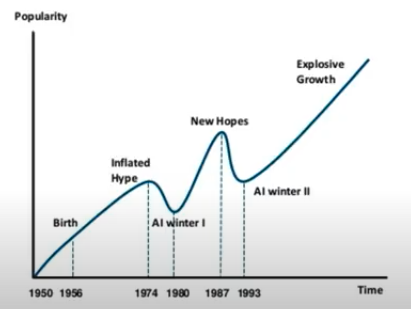
Neural networks only accept certain input types
Effect:
- Difficult to encode structure and prior knowledge
Frontiers:
- 2D spatial structure like images - CNN.
- Graph data like social networks, internet traffic, state machines, mobility & transport, molecules, biological networks - graph convolutional networks.
- 3D data (point clouds: unordered sets with spatial dependence between points) - CNN.
Neural networks are excellent function approximators
Effect:
- Poor generalisation, memorises data. Does not work on unseen data.
- Easily fooled by adversarial attacks (image + perturbation = ???).
Frontiers:
- (See below on uncertainty)
Neural network predictions are point predictions
Effect:
- Cannot quantify uncertainty for unseen data.
Frontiers:
- Bayesian deep learning for uncertainty. Rather then learning the weights directly, we learn a posterior over the weights i.e. P(W|X,Y). This posterior is intractable, however.
- Ensembling for uncertainty estimation.
- Evidential deep learning: directly learn the underlying uncertainty using evidential distributions.
- Multi-task learning using uncertainty
Neural networks are large
Effect:
- Data hungry
- Computationally intensive
Neural networks are complex
Effect:
- Requires expert knowledge to design and fine-tune
- Finicky to optimise: non-convex, choice of architecture, learning parameters
- Uninterpretable
Frontiers:
- Automated machine learning for NAS.
Learning rate scheduler
- Cosine
Backpropagation softmax and categorical cross entropy
import torch.nn.functional as F
import torch.nn as nn
y = torch.tensor([[0,0,1]], dtype=torch.float32)
x = torch.tensor([[2,3]], dtype=torch.float32)
y_true = torch.tensor([2], dtype=torch.long)
linear = nn.Linear(2,3,bias=False)
linear.weight.data = torch.tensor([[-1,1],[2,-1],[0,2]], dtype=torch.float32)
z = linear(x)
y_pred = F.softmax(z, dim=1)
#loss = F.nll_loss(y_pred, y_true)
loss = -torch.log(y_pred[y==1])
z.retain_grad()
loss.retain_grad()
y_pred.retain_grad()
loss.backward()

Hyperparameter search
- Grid search
- One learning rate cycle / one-fit cycle
(search for the right learning rate) start low lr, increase exponentially for every batch. Plot LOSS vs. LR. We need to select a point on the graph with the fastest decrease in the loss. In this example, the loss function decreases fast when the learning rate is between 0.001 and 0.01.

Subsequently, use a cyclic learning rate scheduler and use this learning rate as the max.
Layers
https://twitter.com/fchollet/status/1627818199311069184?s=20
Dropout
allows training on smaller datasets without over-fitting.
Batch normalization
allows for faster training. Normalise each pixel value across mini-batch
Make sure to scale the data if it’s on a very different scales. If we don’t scale the data, the level curves (contours) would be narrower and taller which means it would take longer time to converge (see figure 3).
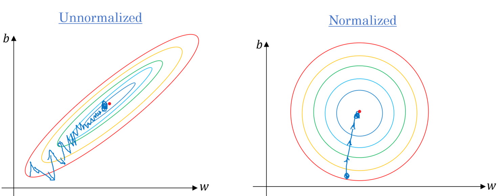
Skip connections
why do very deep nets perform worse as you keep adding layers?
Addressing the problem of training a really deep architecture by introducing skip connections: layers can copy their inputs to the next layer
Skip connections, which are employed in ResNet and DenseNet allow to build deeper architectures, while mitigating the vanishing gradient problem. All we have to do is to add the output of previous layers to the input of layers located deeper in our network, before the activation function is applied:
Skip connections work, because by connecting layers via shortcuts, we can at least learn the identity function. The intuition behind this technique is, that gradients do not have to be backpropagated solely through convolutional (or fully connected) layers, which cause gradients to diminish once they reach the earlier layers of the network. They can rather “skip” layers through the addition operation of the skip connection.

Residual learning: instead of trying to learn some features, we try to learn some residual. Residual can be simply understood as subtraction of feature learned from input of that layer
Improving speed / accuracy
https://myrtle.ai/how-to-train-your-resnet/
During training
- Data
- Perform preprocessing once before training
- Curriculum learning - train on simple examples, then the hard ones
- Architecture
- Mixed precision training
- Smaller model
- Engineering layers
- Transfer learning
- Hyperparameters
- High learning rates (super convergence)
- Increase batch size
- Optimiser / regularisation / loss
- Mixup regularisation
- AdamW
- Label smoothing
During inference
- Quantisation. Stores weights in low precision formats
- fixed point vs floating point
- post-training quantisation vs quantisation-aware training
- Pruning
- Set some weights to 0. This cuts connections.
- Low Rank Approximation.
- convolution layer can be broken down into two layers
- Weight sharing
- Use means clustering to cluster 2.09, 2.12, 1.92, 1.87 and make them be 2. Stick to 2 bits for FCN and 4 bits for CNN
- Pruning & training iteratively
- Prune then retrain using a super small learning rate (1e-5)
Activation functions
Non-linearity functions
Decides if a neuron should be on or off, and if on, how useful is it. They also ensure that values are contained and don’t explode.
The purpose of activation functions is to introduce non-linearities into the network. In real life, almost all of our data is non linear. Nonlinearities allow you to approximate arbitrarily complex functions by introducing nonlinearities into decision boundaries.
Sigmoid
Softmax
Given
The softmax function is given by
Softwax with temperature
Temperature, , is a parameter used in NLP to increase or decrease a model's confidence.
Intuition
A low confidence means that the distribution of the classes is roughly uniform:
where is the normalisation constant.
We can achieve this with the exponential function (for non-linearity purposes):
where each of the is very small (close to 0).
Softmax with temperature is easy to compute (via vectorised operations) (?).
See the blog post from Luke Salamon to visualise varying the temperature.
ReLU
Rectified Linear Unit
LeakyReLU
CeLU
Continuously Differentiable Exponential Linear Unit
GeLU
Gaussian Error Linear Unit
SwiGLU
Swish
Reinforcement learning
Learn an optimal policy for sequential decision-making problems in a stochastic environment.
Metric learning
Distance-Based Learning
- Examples
- By class
- Positive
- Negative
- By model training
- Hard
- Soft
- By class
- Mining (Hard Mining)
- Online (while training model)
- Offline (before? training model)
Positives / Positive Examples
A pair of examples from the same class
Negatives / Negative Examples
A pair of examples from different class
Hard Mining
Finding the relevant examples that can train the model (non-zero gradient)
Hard Examples
Examples that cause the model to train (non-zero gradient)
Hard Negative Mining
Finding negatives that cause the model to train (non-zero gradient)
Hard Positive Mining
Finding positives that cause the model to train (non-zero gradient)
Hard Positives
Positives that cause the model to train (non-zero gradient)
Hard Negatives
Negatives that cause the model to train (non-zero gradient)
Offline Hard Mining
Hard mining before training model
Online Hard Mining
Hard mining while training model
Learning to rank
- Data scope
- Objective
- Difference between supervised learning and LTR
- Algorithm
- Score to probability
- Inference time
- Loss function
- Rank-aware evaluation metrics
- Variants
- Others
Used in information retrieval and recommender systems.
Data scope
For learning to rank, we are trying to compare between positive samples and negative samples.
Objective
Train a model to predict the probability of a certain item ranking over another (pairwise ranking). This directly trains the model to rank the items, contrary to using proxy measure (eg. probability of a user clicking on an item).
Difference between supervised learning and LTR
Supervised learning: Click probability is {ItemA: 90%, ItemB: 10%}
LTR: ItemA will rank higher with probability 70%
Algorithm
Inputs: 2 item embeddings
Penultimate output: Scores (the higher the score, the higher the rank)
Output: Probability of one item ranking over the other
Target: Binary
Score to probability
Based on the algorithm above, we find a way to translate the score to probability. Here are our needs:
- Larger difference in scores translate to a larger probability
- If scores are equal, the probability should be 0.5
- The probability function should be symmetric
With these, the sigmoid function is a natural choice.
Inference time

Loss function
We want the probability to be large -> maximise probability = minimise negative probability
Because of this we use a negative log likelihood of the probability as the loss function.
Because of this formulation, the pairs of dataset should be in terms of (i,j) where the true ranking of I is higher than j.
Optimiser: Gradient descent
Rank-aware evaluation metrics
-
CG (cumulative gain)
-
DCG (discounted CG)
-
IDCG (ideal DCG)
-
NDCG (normalised DCG)
Measure of ranking quality.
-
MAP (only relevant documents!) If my mAP@10 = 0.8, it means that on average (across users), if I predict k items for you (where k can be 1≤k≤10), 0.8k will be relevant. https://web.stanford.edu/class/cs276/handouts/EvaluationNew-handout-1-per.pdf
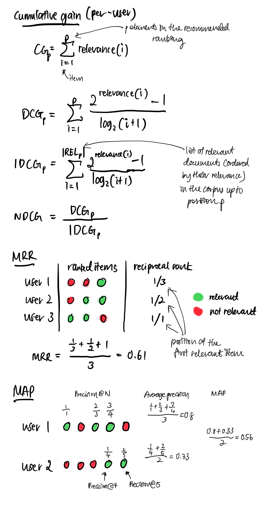

AP@5 is per user
mAP@5 is averaged across all users
Variants
- RankNet (agnostic to actual ranking, because of training the data in a pairwise manner)
- LambdaRank
- LambdaMART
Others
- RankSVM
- RankBoost
Deep generative models
Supervised learning: learn function to map x to y.
Unsupervised learning: learn hidden or underlying structure of data
Generative modelling: learn a model that represents distribution of data
Main tasks:
- Density estimation
- Sample generation
Why learn generative models?
Debiasing
Outlier detection
Generative models
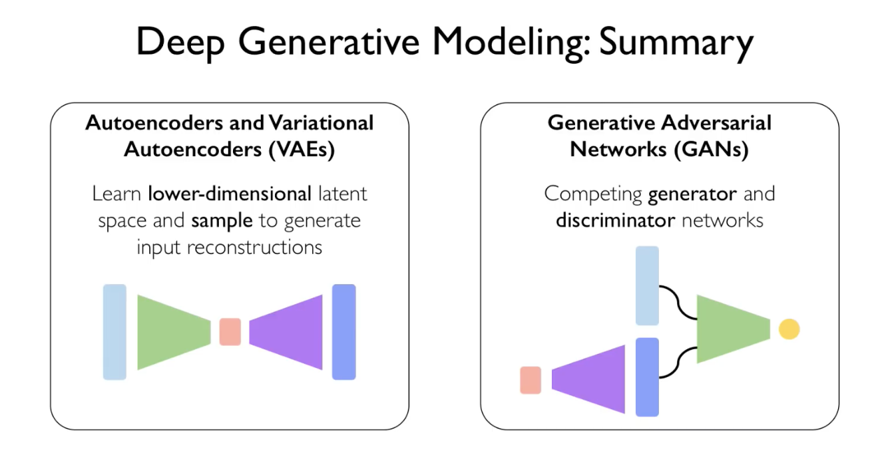
- Autoencoder
- VAE
- GAN
💡 Autoencoders Bottleneck hidden layer foreces network to learn a compressed latent representation. Reconstruction loss forces the latent representation to capture as much information about the data as possible.
Autoencoder

Encoder learns mapping from the data x to a low-dimensional latent space z (“compressed”).
Decoder learns mapping from latent z to a reconstructed observation, x_hat.
Loss function is L(x, x_hat). It doesn’t use any labels.
Reconstruction loss forces the latent representation to capture as much information about the data as possible.
VAE
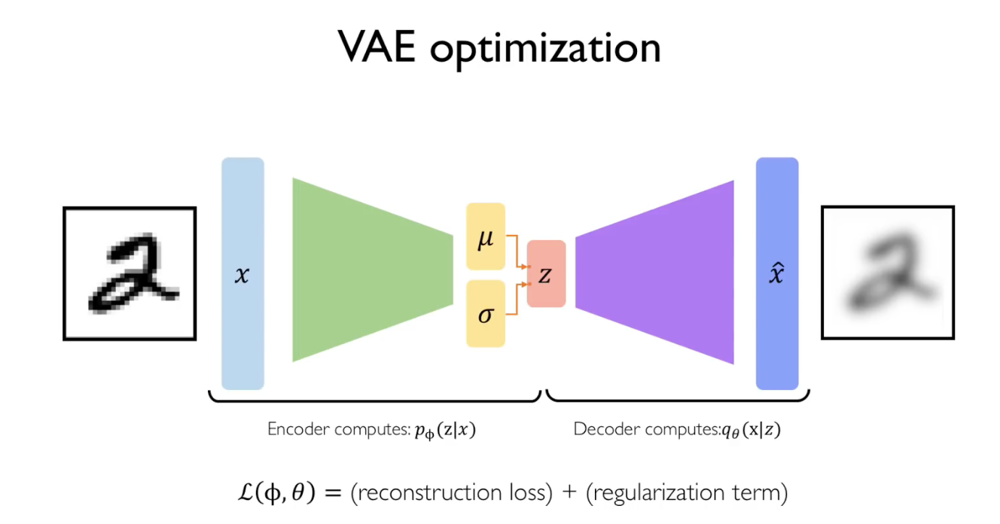
Variational autoencoder
Instead of learning a deterministic latent vector z, we learn a vector of mean and a vector std that parametrise the probability distribution for each of the latent variables


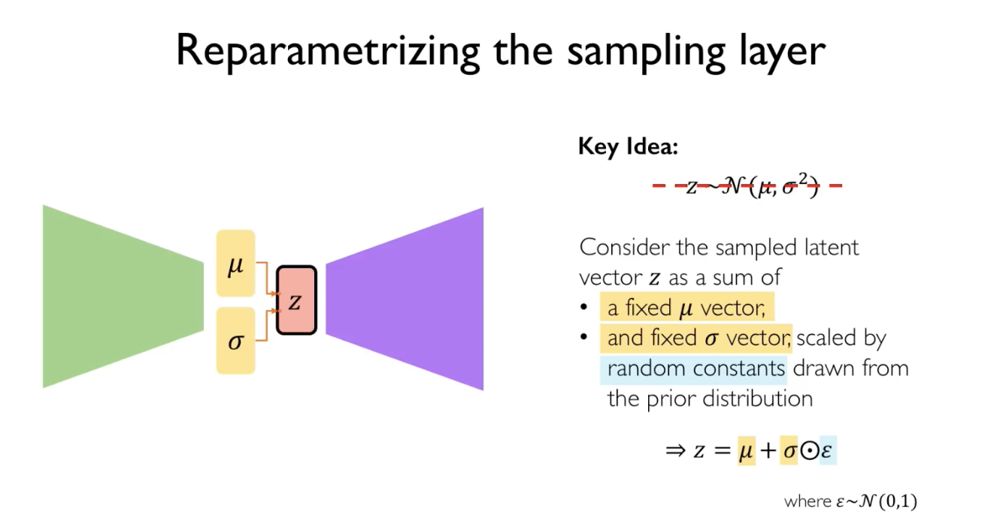


GAN
Generative Adversarial Network
Instead of explicitly modelling the density (distribution of data), we just sample to generate new instances. However, we can’t sample from complex distribution directly. Thus the solution is to sample from something simple (noise), learn a transformation to the training distribution.
💡 We also cannot measure the difference of the generated samples with training samples because it's too expensive.
Adversaries (neural networks):
- The generator turns noise into an imitation of the data
- The discriminator tries to discern between a fake generated by the generator and the true data.
Uses
Style transfer: CycleGAN
Mitigating bias through learned latent structure
- Learn latent structure using VAE.
- Estimate distribution. (How?)
- Adaptively resample data.
- Learn from fair data distribution.
Association rule mining
Suitable for nominal data?
The goal of association rule mining is to find interesting or significant association rules and to find them efficiently.

Applications
-
Market basket analysis
- Shelf management, item placement. (put cereal and milk at opposite ends of NTUC to force people to chance upon other items)
- Promotion bundles
- Recommendations
- Pricing strategies
-
Medical data analysis
Note that there are 2 types of items here.
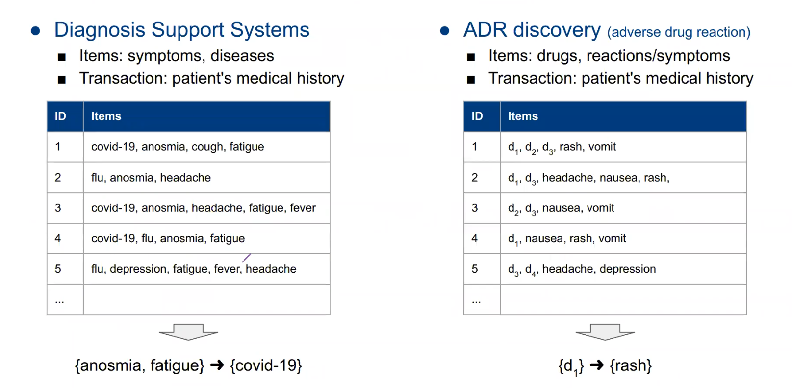
-
Census data analysis
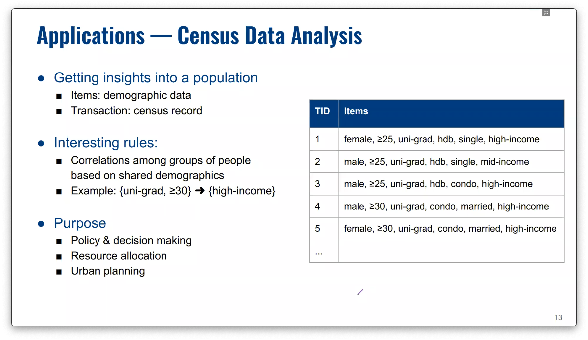
-
Behaviour data analysis
unique items result in possible rules1.
Definitions
: no. of unique items
Itemset; , : a subset of items
: an association rule
: no. of transactions
Support count: no. of transactions that has this itemset
Support:
Frequent itemset: itemsets with at least support
Support of an association rule:
Confidence of a rule:
Lift:
💡 A high support means that the itemset frequently appear together historically
💡 A high confidence means that if an itemset X appears, it usually appears with itemset Y
💡 If S({milk, bread}) = 10, then S({milk, bread, ...}) ≤ 10
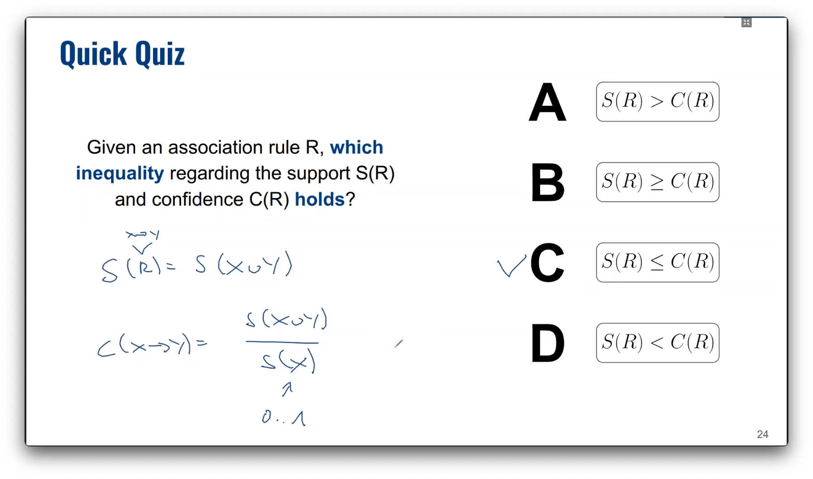

Brute force
- Specify minimum confidence and minimum support.
- List all rules
- Drop rules that don't meet the requirement
Apriori
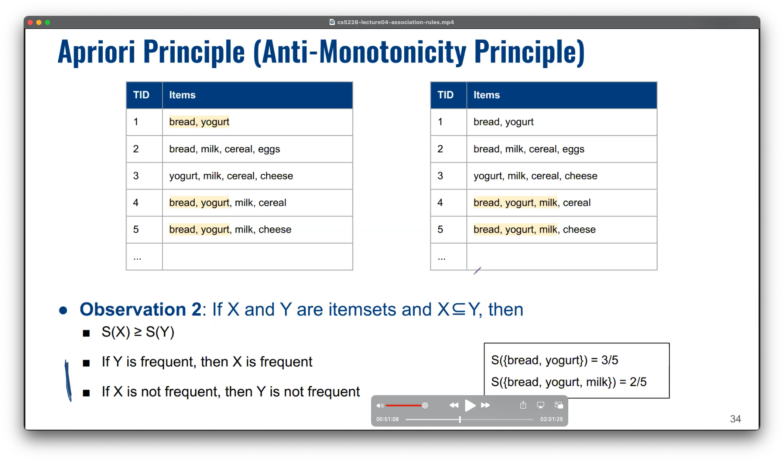
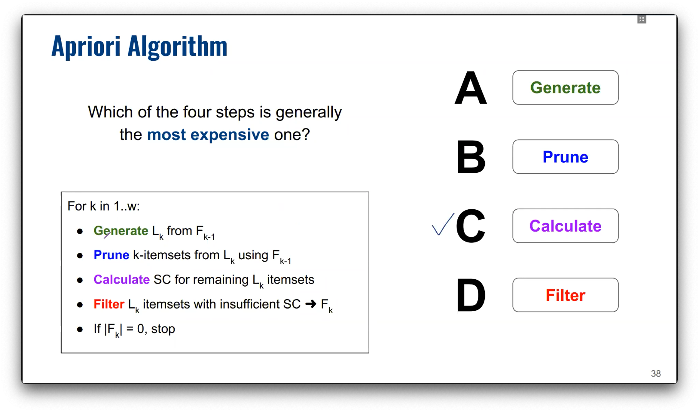
Two-Part algorithm for mining association rules
- Frequent itemset generation
- Generate all possible itemsets
- Drop itemsets that don't meet the
minSuprequirement
- Association rule generation
- Drop rules that don’t meet the the
minconfrequirement
- Drop rules that don’t meet the the
Explanation why unique items result in possible rules.
An item can be either be on the LHS, RHS or neither ("None").
Item 1: [LHS, RHS, None]
Item 2: [LHS, RHS, None]
Item 3: [LHS, RHS, None]
...
Item d: [LHS, RHS, None]
Any possible state can be obtained by drawing a path from one of the 3 states in Item 1 down to one of the 3 states in Item . For , a possible state is
[LHS,None,RHS,RHS]
which denotes {1} -> {3,4}.
First, we calculate the total number of possible states, which is . -- (1)
However, we should remove the states that are not allowed eg. {} -> {3,4}.
It is not possible to have only one side filled up, say only the RHS. For this to happen, an item is allowed to be in 2 different positions at a time (LHS and None). This gives us positions. -- (2)
Item 1: [LHS, None]
Item 2: [LHS, None]
Item 3: [LHS, None]
...
Item d: [LHS, None]
We repeat this for when items are only filled up on the LHS. This gives us positions. -- (3)
Item 1: [RHS, None]
Item 2: [RHS, None]
Item 3: [RHS, None]
...
Item d: [RHS, None]
Note that in the previous two cases, we eliminated a case twice -- the case where all items are None. So we will add 1 back. -- (4)
Item 1: None
Item 2: None
Item 3: None
...
Item d: None
Starting with the total possible states (), we remove the states that cannot happen from the 3 cases above:
Decision tree
#nonparametric #nonprobabilistic
Keep splitting, split based on highest Gini Gain or Information Gain.
💡 Gini impurity is a way of measuring if a split is "good". Calculate Gini impurities (1) before split, (2) left branch and (3) right branch. Then weight the impurities of each branch (2) and (3). Then calculate how much impurity is removed by taking (1) minus the weighted (2) and (3).
Try every split:
- Every feature
- Every possible threshold (optimisable)
Stop when:
- All Gini gains are the same
- No Gini gain
Algorithms:
- ID3 (multiway)
- Brute force
- C4.5 (binary)
- Brute force
- CART
- Construct binary trees from using features and thresholds that yield highest information gain
👉 Tree-based algorithms don’t require scaling!
DBSCAN
Density-based spatial clustering of applications with noise
#nonparametric #nonprobabilistic
The DBSCAN algorithm views clusters as areas of high density separated by areas of low density.
- Choose 2 numbers: max_distance, min_points
- Pick a random datapoint. This is cluster A
- Criteria for datapoints to be in this cluster:
- They are within a distance of max_distance
- There are more than min_points datapoints
- Once run out of points, find another datapoint that has no cluster. This is Cluster B.
From CS5228:
Clusters: density-based
Clustering: partitional, exclusive, partial
where is the radius defining no. of points in the neighbourhood and the min. no. of points for it to be a core point.
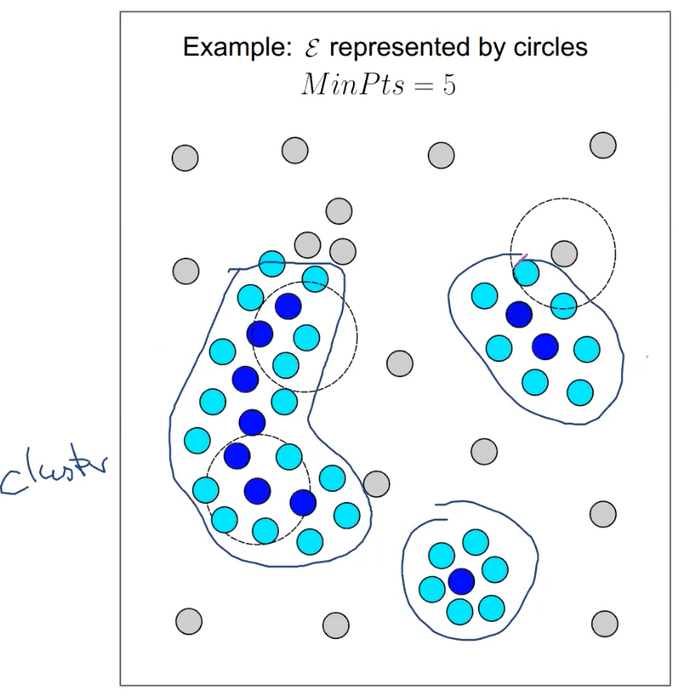
There are 3 types of points:
- Core points: Any points with at least MinPts neighours in a radius .
- Border points: Any non-core points with at least one core point within the radius .
- Outliers
Algorithm:
-
Repeat
- Pick a random unexplored point x.
- If x is not a core point, label as noise (might change later).
Until x is a core point
-
Then explore this new cluster starting from this core point.
- A neighbour of a cluster is never a noise.
- Do for all neighbours
- Exploration stops once there are no more core points.

💡 Note that a noise point can become a border point.
-
Always converges
-
Cannot handle different densities

-
Very sensitive to parameters
Parameters can be chosen by
-
EDA: plot distribution of all pairwise distances. This can help us to decide suitable values for .
-
Intuitive semantic meaning of .
-
Quiz
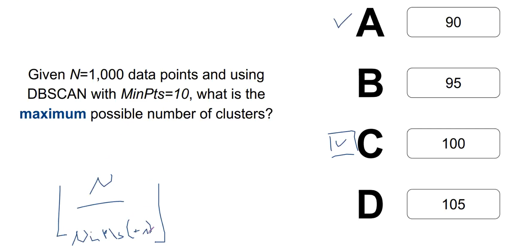
Review
Evolutionary algorithms
Subject a population to a heuristic survival-of-the-fittest competition. Individuals that score higher on the fitness function are granted more offspring in the next generation through crossover and mutation (slightly perturbed copes of themselves or combinations of themselves with other individuals). Individuals that score poorly are removed from the population.
- Genetic algorithm
- Evolution strategy
- Natural evolution strategy
Natural Evolution Strategies (OpenAI)
Individuals come from a probability distribution (usually Gaussian) around a single set of parameters. Iteratively update this population distribution such that average fitness of individuals drawn from population is maximised. Objective function is differentiable.
Frequent itemsets
Brute force
Computationally expensive. Not enough memory.
Apriori
k passes
✅ Less expensive (use the anti-monotone property)
PCY
(Park-Chen-Yu)
k passes
✅ Less memory
Random sampling
no. of passes can be customised
Run an algorithm eg. Apriori.
Note that false positives (itemset may be frequent in the sample but not in the entire set of baskets) false negatives may occur. To reduce these, we can use a smaller threshold, but requires more space.
SON
(Savasere Omiencinski Navathe)
2 passes
Divide the baskets into chunks
Key ideas:
- If an itemset is not frequent in any chunk, then it is indeed not frequent.
- If an itemset is indeed frequent, then it is frequent in at least one chunk.
✅ Less memory (cos distributed)

Gaussian process
import numpy as np
from sklearn.metrics.pairwise import rbf_kernel
class Kernel:
@staticmethod
def rbf(x_1, x_2):
K = rbf_kernel(x_1, x_2)
return K
class GaussianProcess:
def __init__(self, X, y, kernel="rbf"):
self.X = X
self.y = y
# Prepare kernel
self.k = Kernel.rbf(self.X, self.X)
# Invert kernel
self.k_inv = np.linalg.inv(self.k)
def hey(self):
pass
def update(self, X_new, y_new):
"""Not used"""
self.X = np.concatenate(self.X, X_new, axis=0)
self.y = np.concatenate(self.y, y_new, axis=0)
# Update the covariance matrix for existing training points
self.k = Kernel.rbf(self.X, self.X)
self.k_inv = np.linalg.inv(self.k)
def predict(self, X_new):
"""Predict a value"""
# Get all the kernel parts
k_new = np.array(
[Kernel.rbf(X_new, np.array([x])).reshape(-1) for x in self.X])
k_newnew = Kernel.rbf(X_new, X_new)
# Mean
y_pred = np.dot(k_new.T, self.k_inv).dot(self.y)
y_pred = y_pred.squeeze()
# Covariance
sigma = k_newnew - np.dot(k_new.T, self.k_inv).dot(k_new)
sigma = sigma.squeeze()
return y_pred, sigma
import numpy as np
from gp import Kernel, GaussianProcess
import matplotlib.pyplot as plt
# Real
X = np.linspace(1,20,10000)
X = X.reshape(1,-1)
y = np.sin(X)
plt.scatter(X,y, color='black')
# Data
SIZE = 5
X = np.random.uniform(low=1, high=20, size=SIZE)
X = X.reshape(-1,1)
y = np.sin(X) + np.random.normal(0, 0.3, SIZE).reshape(-1,1)
plt.scatter(X,y, color='yellow')
# New data
X_new = np.random.uniform(low=1, high=20, size=100)
X_new = X_new.reshape(-1,1)
# GP
gp = GaussianProcess(X, y)
y_new = gp.predict(X_new)
plt.scatter(X_new,y_new, color='red', alpha=0.5)
# Plot
plt.show()
GMM
Gaussian Mixture Model
#parametric #probabilistic
A probabilistic model that assumes all the data points are generated from a mixture of Gaussian distributions with unknown parameters
Optimiser: EM algorithm
Hierachical clustering
- agglomerative (slowly accumulate)
- divisive (slowly split)
Naive implementation has time complexity where is the no. of datapoints
- Find pairwise distance —
- Merge the 2 closest points.
- Repeat for the other points —
Can use priority queue to get .
Hierarchical clustering is achieved by use of a metric and a linkage criterion.
Examples of linkage criteria:
- Single linkage (minimum)
- Complete linkage (maximum)
- Average linkage (average between pairs)
- Ward
- Centroid
Gradient boosting

k-means
#nonparametric
Before notes
- Assign k centroids randomly
- Get each data point to see which centroid it’s closest to, and assign a class
- Calculate centre of points for each group
- Reassign the k centroids
- Use silhouette heuristic or the elbow method to determine a reasonable value for k
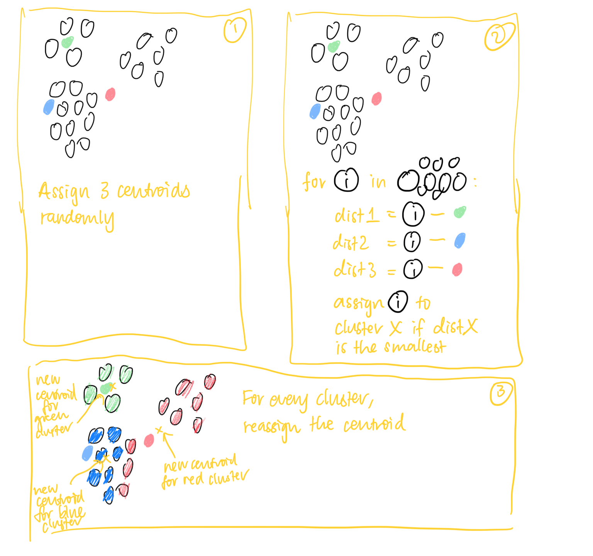
💡 Assumes clusters are normally distributed in each dimension
Time
- Assign k centroids
- For every datapoint, calculate distance to all other centroids —
- Repeat for all datapoints —
- Reassign each datapoint to the nearest cluster
- Repeat for m iterations until convergence —
Space
From CS5228:
Clusters: centroid-based
Clustering: partitional, exclusive, complete
NP-hard; .
Define the objective function to minimise:
which is the total squared distance between every point and centroid across all the K clusters. For every cluster k, and for every point in this cluster , find the squared distance between the point and the cluster's centroid, .
Taking derivative with respect to , the best centroid can be found as follows:
Lloyd's algorithm
- Select points in the space (not datapoints) as initial centroids
- Repeat
- Assign each point to the nearest cluster
- Reassign the centroid based on average
Note:
-
Always converges
-
But returns a local optimum
-
Susceptible to natural clusters (only looks for spherical shapes). Potential workaround is to choose a larger value of .
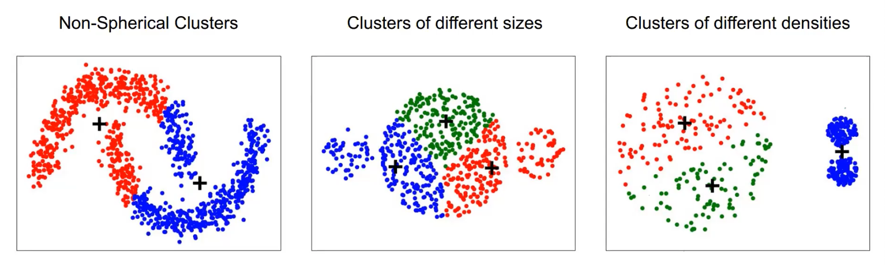
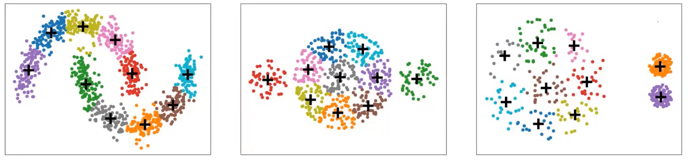
-
Different initialisations yield different clusterings. Some centroid can yield empty clusters.

All the points are closest to only 1 centroid.
k-means++
Same like Lloyd's but different initialisation:
-
Initialisation
- Pick random datapoint as first centroid
- ?????????? just ensures the centroids are distributed across the dataset
-
Repeat
...
💡 Only initial centroids must be datapoints.
X-means
- Start with .
- For every cluster, see if it can be split by 2. This uses a scoring function like BIC, AIC, MDL.
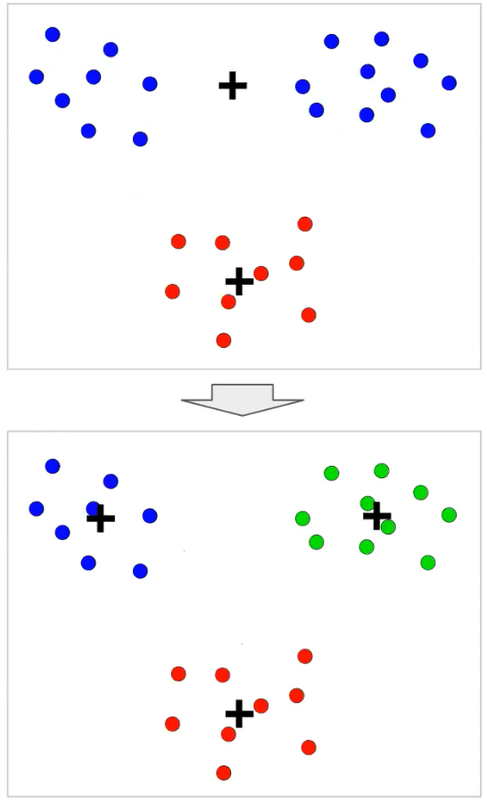
k-medoids
Use when you cannot compute averages.
????????? use Jaccard similarity ????? (prof didn't explain properly)
⚠️ Centroids must be datapoints
Quiz
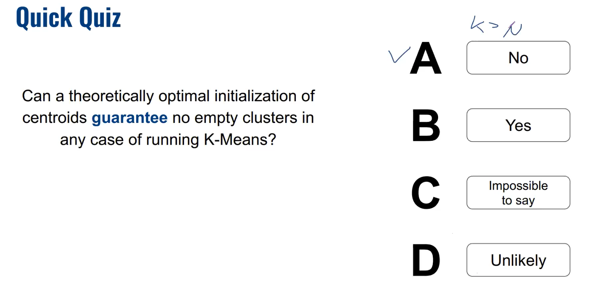
k-NN
#nonparametric #nonprobabilistic
Use a distance metric to calculate the closest neighbours. Then, take its mean (or median etc.).

LDA
LDA visualisation from Lettier
Linear models
Uses OLS. See page for assumptions.
Logistic regression
#parametric #probabilistic
A model that predicts the probability using the logistic function
Model:
A regression model whose output (termed as logits) is mapped from a real number to through the use of logistic function, which is the inverse of log odds. Log of odds is a measure of odds, which is a ratio (of probabilities).
To get the loss function, notice that each sample can be considered as a Bernoulli trial hence the model follows a Bernoulli distribution. Our objective is to maximise the likelihood, which is equivalent to minimising the negative of maximum likelihood.
Why is it called logistic regression?
It's because its underlying technique is quite the same as linear regression. The term logistic is taken from the logit function which is used as the method of classification. A logit function is
which maps values from to .
What is the relation between the logistic function and the logit function?
A logistic function is inverse-logit:
which will map values from to , which will be convenient for binary classification tasks.
The last form of the equation is probably easier to compute in libraries (?).
Mean shift
#nonparametric
Popular in computer vision
Builds on KDE
Naive Bayes
#probabilistic
Assumes strong independence assumption between features, where each feature x is a particular distribution (usually Gaussian), so need to get the mean and std dev.
https://remykarem.github.io/blog/naive-bayes.html
Inference time:
CNN
Calculations
-
Computational cost
-
No. of parameters
where the last term is for bias
PageRank
Importance
(aka "rank", "vote")
There are several ways to define importance of a page:
-
no. of in-links to this page
⚠️ susceptible to attacks
-
(weighted) sum of importance of links to this page
💡 recursive definition of importance
PageRank
Properties of importance
- A vote from an important page is worth more
- A page that votes too many pages has a smaller vote
This recursive definition can be represented as
and can be solved via Power Iteration.
Issues
Some issues that might not ensure convergence:
-
Spider trap
At the end of the day we have
y 0 a = 0 m 1
-
Dead end
At the end of the day we have
a 0 b = 0
PageRank with Teleports
"Google Matrix A"
where the second term is a matrix
"Random teleport" as a solution for spider trap
dead ends → assign 1/N prob
Random teleport will ensure convergence to a stationary distribution.
Random teleport ensures that the Markov chain is not reducible.
💡 Recall that an irreducible Markov chain (can go from a state to any state) has a stationary probability distribution if and only if ALL of its states are positive recurrent.
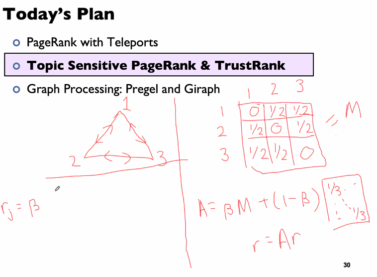
Topic-sensitive PageRank
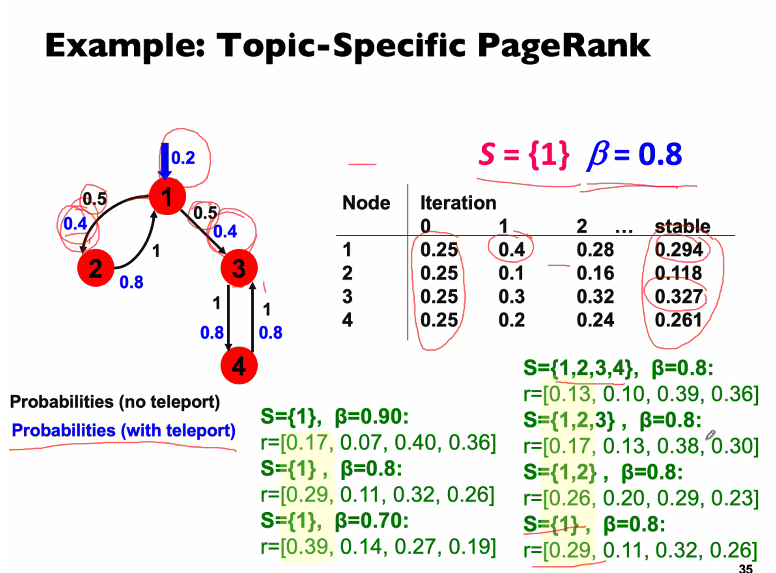
"teleport set" is the set of pages of similar topic
TrustRank
goal is to identify trusted vs untrusted pages.
this assumes that good pages only rarely link to bad pages.
start with a small set of trusted pages and propagate trust.
"teleport set" is the set of trusted pages
PCA
Principal Component Analysis
#parametric #nonprobabilistic
Premise: the useful information is the underlying axes of data that gives you most variance
- Linear dimension reduction technique
- Things that are different end up very far apart
- Maximises variance and preserves large pairwise distances
- Computationally cheap
- “Redefine new axes”
Principal components
They are the
- Underlying “axes” of data
- = “directions” (= eigenvectors) where the data is most spread out, i.e have the most variance (variance = eigenvalues)
- No. of eigenvalues/eigenvectors equals to no. of dimensions of data
- The eigenvectors are perpendicular (= orthogonal) to each other
import numpy as np
import matplotlib.pyplot as plt
from sklearn.decomposition import PCA
# Generate data
angle = np.radians(30.)
x1 = np.random.normal(scale=8, size=100)
x2 = x1*np.tan(angle) + np.random.normal(scale=3, size=100)
# x2 = np.random.normal(scale=3, size=100)
x1 = x1-np.mean(x1)
x2 = x2-np.mean(x2)
data = np.array([x1, x2])
# PCA
pca = PCA()
pca.fit(data.T)
# Matrix transformation
# angle = np.radians(30. - 360.) # same
angle_derotate = -angle
derotate = np.array([[np.cos(angle_derotate), -np.sin(angle_derotate)],
[np.sin(angle_derotate), np.cos(angle_derotate)]])
derotated_data = np.matmul(derotate, data)
rotate = np.array([[np.cos(angle_derotate), np.sin(angle_derotate)],
[-np.sin(angle_derotate), np.cos(angle_derotate)]])
rotated_data = np.matmul(data.T, rotate)
# Get explained variances
print("Variance in X: {:0.1f}".format(np.var(derotated_data[0])))
print("Variance in Y: {:0.1f}".format(np.var(derotated_data[1])))
print(pca.explained_variance_)
# Get the principal components
print(derotate)
print(rotate)
print(pca.components_.T)
# Covariance
# print(np.cov(data))
# print(np.matmul(np.matmul(derotate, data).T, rotate)) ????
SVM
Support Vector Machine
What is SVM?
SVM is a supervised learning algorithm that maximises the margin between classes by finding the best decision boundary that separates the data into its classes. The datapoints which are at the margin are called support vectors.
“Large-margin classifier”
- Linear separable
- Nonlinear separable
- Soft Margin
Two types of misclassifications are tolerated by SVM under soft margin:
- The dot is on the wrong side of the decision boundary but on the correct side/ on the margin (shown in left)
- The dot is on the wrong side of the decision boundary and on the wrong side of the margin (shown in right)
- Kernel Tricks
- What Kernel Trick does is it utilises existing features, applies some transformations, and creates new features.
- Think of the polynomial kernel as a transformer/processor to generate new features by applying the polynomial combination of all the existing features.
- Think of the Radial Basis Function kernel as a transformer/processor to generate new features by measuring the distance between all other dots to a specific dot/dots — centres.
- Soft Margin
Two types of misclassifications are tolerated by SVM under soft margin:
Visualisation
https://dash.gallery/dash-svm/
t-SNE
#nonparametric
t-Distributed Stochastic Neighbour Embedding (2008)
- Unsupervised non-linear technique
- Things that are close remain close (?)
- preserving only small pairwise distances or local similarities
- Perplexity ~ a guess about the number of close neighbours each point has. 5-50
- Creates 2D maps from multidimensional data
- More computationally expensive
UMAP
#nonparametric #nonprobabilistic
Uniform Manifold Approximation and Projection
- The data is uniformly distributed on a Riemannian manifold;
- The Riemannian metric is locally constant (or can be approximated as such);
- The manifold is locally connected.
Similarity measures
Distance metrics, distance measures
For datapoints, computing pairwise distance is because
Axioms of distance measures:
-
Non-negativity — d(a,b) ≥ 0
-
Symmetry — dist(a,b) = dist(b,a)
-
Identity — d(a,b) = 0 iff a=b
-
Triangle equality — d(a,b) ≤ d(a,x) + d(x,b)
a * * x b *
Manhattan distance
(shortest path by along a grid) L1 norm
or
Euclidean distance
(shortest path) L2 norm
or
Dot product
or
💡 Difference between dot product and inner product is that the dot product is a specific inner product that works on .
Cosine similarity
(we are interested in the orientation, not the magnitude of vectors). Value is bounded between .
or
💡 Difference between dot product and cosine similarity is that cosine similarity ignores the magnitude (scaled by magnitude).
Pearson correlation
💡 Difference between cosine similarity and correlation is correlation is invariant to shifts.
Minkowski distance
norm
- Jaccard distance: compare the unique items
- Mahalanobis distance
- Maximum distance
- Haversine distance - distance between 2 points on a sphere
- Hamming distance
- Levenshtein distance

Jaccard distance
Mahalanobis distance
"how many standard deviations away"
Euclidean distance, but normalised with standard deviation
Edit distance
Min. no. of inserts and deletes of characters to convert one to another
d("abcde", "acfdeg") = 3
- Remove g
- Insert f
- Insert b
Similarity search
Brute force
Given documents, there are combinations.
Complexity is .
Min-hashing
Complexity is... ?
Distance
-
Jaccard
doc1: the cat is is is glad today
doc2: the cat is glad
-
Shingling
n-gram
doc1 doc2 ... docN ------------------ (the cat) 1 1 (cat is) 1 1 (is glad) 1 1 (glad today) 1 0 1 indicates that the shingle exists in the doc1 -
Min-hash
hash each document. Highly similar documents usually have the same document
doc = "the cat is is is glad" hash("the cat") = 12 = a hash("cat is") = 41 = b hash("is glad") = 37 = c minhash(doc) = min(a,b,c) = 12Positive example
💡 P( h(d1)=h(d2) ) = jaccard_sim(d1, d2)
-
Find candidate pairs
This is done by comparing signatures.
Similar items
Brute force
LSH
-
Jaccard similarity
-
Shingling
document → {(xx,ds), (ds,4), }
O(n(n-1)/2)
compressing shingles
abcab -shingle-> {ab,bc,ca} -hash-> {1, 5, 7} -
Min-hashing
convert large set to short signatures while preserving similarity document → f4fca09
-
Locality-Sensitivity Hashing
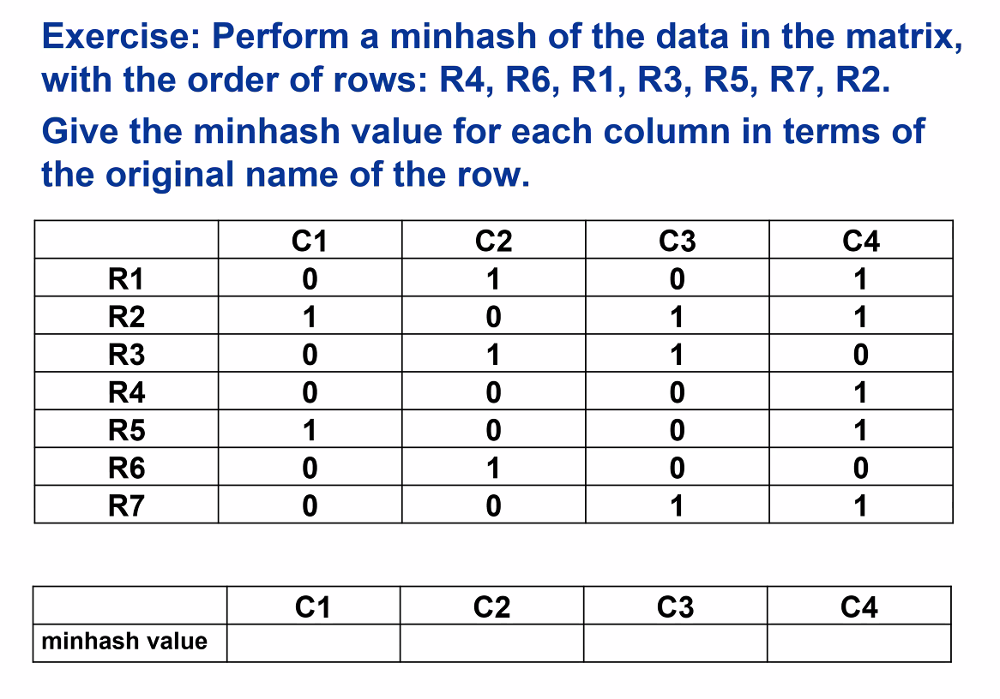
R5; R6; R3; R4

Dimensionality reduction
to create embeddings or projection of high-dimensional vector to 3D
(unsupervised learning)
Dimensionality reduction. Reducing the dimension helps us to visualise better
PCA - keep global distance
t-SNE - focus on local distance
UMAP - focus on local distance, but keep more global distance
Random projection
Runtime: tSNE>UMAP≥PCA
ANN
Approximate nearest neighbours
Fast computation of nearest neighbours is an active area of research. The most naive implementation i s the brute-force computation of distances between all pairs.
Fast approximate distance computations for vector similarity search
Concept drift
data drift, label schema change, model drift
https://twitter.com/chipro/status/1313921889061015557?s=20
Interpretable AI
Explainable AI / Bias in AI
Resources
https://christophm.github.io/interpretable-ml-book/
https://github.com/jphall663/awesome-machine-learning-interpretability
https://microscope.openai.com/models
Explainability refers to the understanding, in simple terms, of how exactly a model works under the hood.
Interpretability refers to the ability of observing the effect that changes in the (i) input or (ii) parameters will have on predicted outputs
What is?
- Extracting insights to understand
- Why did the model make such a prediction?
- How does each feature affect a prediction? What if I did this?
For?
- Trust
- Debugging
- Future data collection
- Feature engineering
- Inform human decision-making
General
- Model cards
- explainx.ai
Tabular
Feature importance
- Tree-based models
- LIME
- Permutation importance: shuffle the data within a column
- Partial dependence plots: keep changing value for one variable
- SHAP values (Shapley additive explanations): compare a value with baseline value
- Integrated Gradients
- DeepLift
- Model-Agnostic Linear Competitors (MALC)
- Captum
Constraining nonlinear models
- Contextual Decomposition Explanation Penalization (CDEP) add a term to the loss function so models can learn how to produce good explanations
- MonoNet
Interpretable models
- Decision trees: Information gain & gini impurity. Splits that have the most impact on a prediction are kept closer to the root of the tree
- Linear models Implicitly interpretable, since they can naturally weight the influence of the weights. Perturbing the inputs or learned parameters has a predetermined effect on the outputs.
- Logistic regression
Image
Using feature visualisation and activation atlases
-
Grad-CAM (Class activation map)
Grad-CAM works by (1) finding the final convolutional layer in the network and then (2) examining the gradient information flowing into that layer. Then multiply the signals with the outputs from (1).
-
Summit
Text
- exBERT
- Ecco
- Language Interpretability Tool by Google
Libraries
- ELI5
- pdpbox
- shap
- Uber’s manifold
- What-If
CS5260 — Neural Networks and Deep Learning II
Adversarial ML
https://www.tensorflow.org/tutorials/generative/adversarial_fgsm
Intro
a machine learning technique that attempts to fool models by supplying deceptive input
adversarial example = image + noise
- Self-driving cars: kill people
- Spam classifiers
- Biometric recognition — steal money eg. apple pay
Given
where is the adversarial sample, is the image and is the perturbation,
then if
where is the number small enough to be discarded by the hardware,
we expect the model assigns the same class to both and .
This also makes use of the fact that digital images often use 8 bits per pixel:
(0, 1/255, 2/255, ..., 255/255)

- Take-away
- A simple linear model can have adversarial examples if its input has sufficient dimensionality
How to attack
FGSM (whitebox)
Fast Gradient Sign Method
attacker has complete access to the model (white box attack)

One-step target class method (whitebox)


Build a substitute model
Black-box Attack, Papernot et al. AsiaCCS 2017
based on a small no. of initial queries to the model in production
How to defend
Adversarial training

💡 Metric: “89.4% error rate on adversarial examples” — which is bad
Note that adversarial training can have a negative impact (lower accuracy on clean samples, compared to models that don;’t go through adversarial training)

Must do fine-tuning together with adversarial training
Recap: Batch normalisation


Use Disentangled Learning via an Auxiliary BN. Uses the AdvProp algorithm

Motivation for this is that the 2 different samples have different distributions
AutoML
- H20-AutoML
- Optuna
- Auto-sklearn
- TPOT
- Microsoft NNI
- AutoKeras
- Model Search by Google
Google’s AutoML Tables:
-
Feature engineering
-
Architecture search
-
Hyperparameter tuning
-
Model selection
-
Model ensembling
-
Model distillation and export